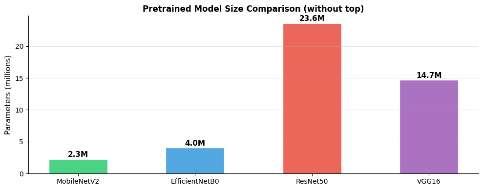
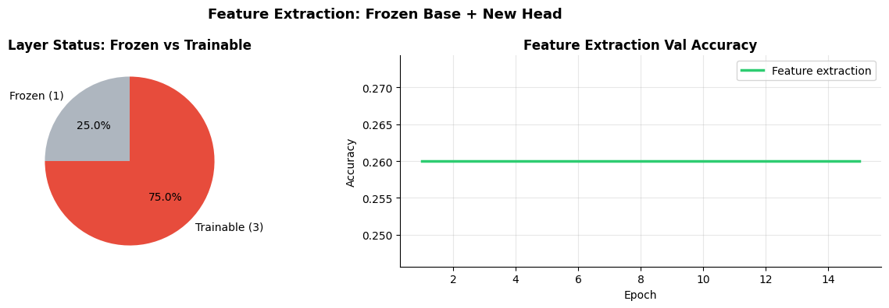
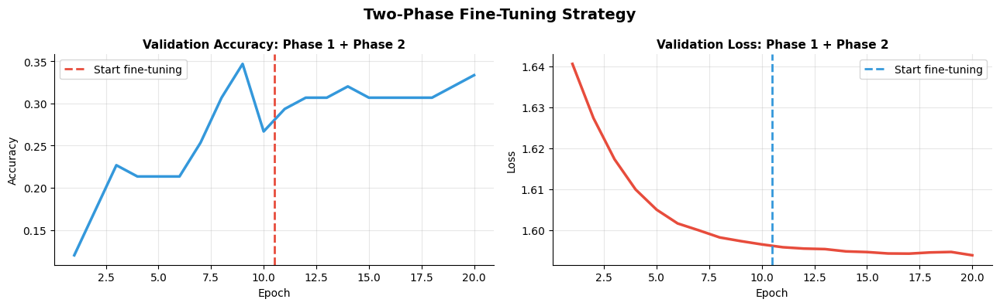
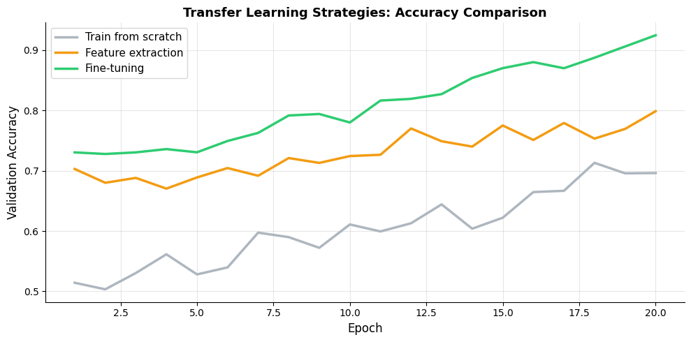

<!DOCTYPE html>


<html lang="en" data-content_root="../" >

  <head>
    <meta charset="utf-8" />
    <meta name="viewport" content="width=device-width, initial-scale=1.0" /><meta name="viewport" content="width=device-width, initial-scale=1" />

    <title>How do you use pretrained models and fine-tune? &#8212; Data Science Study Notes</title>
  
  
  
  <script data-cfasync="false">
    document.documentElement.dataset.mode = localStorage.getItem("mode") || "";
    document.documentElement.dataset.theme = localStorage.getItem("theme") || "";
  </script>
  <!--
    this give us a css class that will be invisible only if js is disabled
  -->
  <noscript>
    <style>
      .pst-js-only { display: none !important; }

    </style>
  </noscript>
  
  <!-- Loaded before other Sphinx assets -->
  <link href="../_static/styles/theme.css?digest=8878045cc6db502f8baf" rel="stylesheet" />
<link href="../_static/styles/pydata-sphinx-theme.css?digest=8878045cc6db502f8baf" rel="stylesheet" />

    <link rel="stylesheet" type="text/css" href="../_static/pygments.css?v=03e43079" />
    <link rel="stylesheet" type="text/css" href="../_static/togglebutton.css?v=9c3e77be" />
    <link rel="stylesheet" type="text/css" href="../_static/copybutton.css?v=76b2166b" />
    <link rel="stylesheet" type="text/css" href="../_static/mystnb.11b39860a7a0cbfd473a3ad8a317855267ff0bd372690045ca344a6b62be495e.css" />
    <link rel="stylesheet" type="text/css" href="../_static/sphinx-thebe.css?v=4fa983c6" />
    <link rel="stylesheet" type="text/css" href="../_static/sphinx-design.min.css?v=95c83b7e" />
  
  <!-- So that users can add custom icons -->
  <script src="../_static/scripts/fontawesome.js?digest=8878045cc6db502f8baf"></script>
  <!-- Pre-loaded scripts that we'll load fully later -->
  <link rel="preload" as="script" href="../_static/scripts/bootstrap.js?digest=8878045cc6db502f8baf" />
<link rel="preload" as="script" href="../_static/scripts/pydata-sphinx-theme.js?digest=8878045cc6db502f8baf" />

    <script src="../_static/documentation_options.js?v=9eb32ce0"></script>
    <script src="../_static/doctools.js?v=9a2dae69"></script>
    <script src="../_static/sphinx_highlight.js?v=dc90522c"></script>
    <script src="../_static/clipboard.min.js?v=a7894cd8"></script>
    <script src="../_static/copybutton.js?v=f281be69"></script>
    <script src="../_static/scripts/sphinx-book-theme.js"></script>
    <script>let toggleHintShow = 'Click to show';</script>
    <script>let toggleHintHide = 'Click to hide';</script>
    <script>let toggleOpenOnPrint = 'true';</script>
    <script src="../_static/togglebutton.js?v=b8b12719"></script>
    <script>var togglebuttonSelector = '.toggle, .admonition.dropdown';</script>
    <script src="../_static/design-tabs.js?v=f930bc37"></script>
    <script>const THEBE_JS_URL = "https://unpkg.com/thebe@0.8.2/lib/index.js"; const thebe_selector = ".thebe,.cell"; const thebe_selector_input = "pre"; const thebe_selector_output = ".output, .cell_output"</script>
    <script async="async" src="../_static/sphinx-thebe.js?v=c100c467"></script>
    <script>var togglebuttonSelector = '.toggle, .admonition.dropdown';</script>
    <script>const THEBE_JS_URL = "https://unpkg.com/thebe@0.8.2/lib/index.js"; const thebe_selector = ".thebe,.cell"; const thebe_selector_input = "pre"; const thebe_selector_output = ".output, .cell_output"</script>
    <script>DOCUMENTATION_OPTIONS.pagename = 'TensorFlow Guide/tf8_pretrained_finetuning';</script>
    <link rel="index" title="Index" href="../genindex.html" />
    <link rel="search" title="Search" href="../search.html" />
    <link rel="next" title="Causal Machine Learning" href="../Causal%20ML/cml0.html" />
    <link rel="prev" title="How do you save and deploy models?" href="tf7_saving_deployment.html" />
  <meta name="viewport" content="width=device-width, initial-scale=1"/>
  <meta name="docsearch:language" content="en"/>
  <meta name="docsearch:version" content="" />
  </head>
  
  
  <body data-bs-spy="scroll" data-bs-target=".bd-toc-nav" data-offset="180" data-bs-root-margin="0px 0px -60%" data-default-mode="">

  
  
  <div id="pst-skip-link" class="skip-link d-print-none"><a href="#main-content">Skip to main content</a></div>
  
  <div id="pst-scroll-pixel-helper"></div>
  
  <button type="button" class="btn rounded-pill" id="pst-back-to-top">
    <i class="fa-solid fa-arrow-up"></i>Back to top</button>

  
  <dialog id="pst-search-dialog">
    
<form class="bd-search d-flex align-items-center"
      action="../search.html"
      method="get">
  <i class="fa-solid fa-magnifying-glass"></i>
  <input type="search"
         class="form-control"
         name="q"
         placeholder="Search..."
         aria-label="Search..."
         autocomplete="off"
         autocorrect="off"
         autocapitalize="off"
         spellcheck="false"/>
  <span class="search-button__kbd-shortcut"><kbd class="kbd-shortcut__modifier">Ctrl</kbd>+<kbd>K</kbd></span>
</form>
  </dialog>

  <div class="pst-async-banner-revealer d-none">
  <aside id="bd-header-version-warning" class="d-none d-print-none" aria-label="Version warning"></aside>
</div>

  
    <header class="bd-header navbar navbar-expand-lg bd-navbar d-print-none">
<div class="bd-header__inner bd-page-width">
  <button class="pst-navbar-icon sidebar-toggle primary-toggle" aria-label="Site navigation">
    <span class="fa-solid fa-bars"></span>
  </button>
  
  
  <div class="col-lg-3 navbar-header-items__start">
    
      <div class="navbar-item">

  
    
  

<a class="navbar-brand logo" href="../intro.html">
  
  
  
  
  
  
    <p class="title logo__title">Data Science Study Notes</p>
  
</a></div>
    
  </div>
  
  <div class="col-lg-9 navbar-header-items">
    
    <div class="me-auto navbar-header-items__center">
      
        <div class="navbar-item">
<nav>
  <ul class="bd-navbar-elements navbar-nav">
    
            <li class="nav-item dropdown">
                <button class="btn dropdown-toggle nav-item" type="button"
                data-bs-toggle="dropdown" aria-expanded="false"
                aria-controls="pst-nav-more-links">
                    Topics
                </button>
                <ul id="pst-nav-more-links" class="dropdown-menu">
                    
<li class=" ">
  <a class="nav-link dropdown-item nav-internal" href="../Python%20Data%20Libs/Python_Data_Libs.html">
    Python Data Library
  </a>
</li>


<li class=" ">
  <a class="nav-link dropdown-item nav-internal" href="../SQL%20LeetCode/SQL_quickcheck.html">
    SQL LeetCode
  </a>
</li>


<li class=" ">
  <a class="nav-link dropdown-item nav-internal" href="../Python%20LeetCode/Python_DSA.html">
    Python LeetCode
  </a>
</li>


<li class=" ">
  <a class="nav-link dropdown-item nav-internal" href="../Machine%20Learning/ML0.html">
    Machine Learning Notes
  </a>
</li>


<li class=" ">
  <a class="nav-link dropdown-item nav-internal" href="../Deep%20Learning/DL0.html">
    Deep Learning Notes
  </a>
</li>


<li class=" ">
  <a class="nav-link dropdown-item nav-internal" href="../PyTorch%20Guide/P0_pytorch.html">
    PyTorch Notes
  </a>
</li>


<li class=" current active">
  <a class="nav-link dropdown-item nav-internal" href="tf0.html">
    TensorFlow Notes
  </a>
</li>


<li class=" ">
  <a class="nav-link dropdown-item nav-internal" href="../Causal%20ML/cml0.html">
    Causal Machine Learning Notes
  </a>
</li>


<li class=" ">
  <a class="nav-link dropdown-item nav-internal" href="../Data%20Science%20Workflow/ds0.html">
    Data Science Workflow
  </a>
</li>

                </ul>
            </li>
            
  </ul>
</nav></div>
      
    </div>
    
    
    <div class="navbar-header-items__end">
      
        <div class="navbar-item navbar-persistent--container">
          

<button class="btn search-button-field search-button__button pst-js-only" title="Search" aria-label="Search" data-bs-placement="bottom" data-bs-toggle="tooltip">
 <i class="fa-solid fa-magnifying-glass"></i>
 <span class="search-button__default-text">Search</span>
 <span class="search-button__kbd-shortcut"><kbd class="kbd-shortcut__modifier">Ctrl</kbd>+<kbd class="kbd-shortcut__modifier">K</kbd></span>
</button>
        </div>
      
      
        <div class="navbar-item">

<button class="btn btn-sm nav-link pst-navbar-icon theme-switch-button pst-js-only" aria-label="Color mode" data-bs-title="Color mode"  data-bs-placement="bottom" data-bs-toggle="tooltip">
  <i class="theme-switch fa-solid fa-sun                fa-lg" data-mode="light" title="Light"></i>
  <i class="theme-switch fa-solid fa-moon               fa-lg" data-mode="dark"  title="Dark"></i>
  <i class="theme-switch fa-solid fa-circle-half-stroke fa-lg" data-mode="auto"  title="System Settings"></i>
</button></div>
      
    </div>
    
  </div>
  
  
    <div class="navbar-persistent--mobile">

<button class="btn search-button-field search-button__button pst-js-only" title="Search" aria-label="Search" data-bs-placement="bottom" data-bs-toggle="tooltip">
 <i class="fa-solid fa-magnifying-glass"></i>
 <span class="search-button__default-text">Search</span>
 <span class="search-button__kbd-shortcut"><kbd class="kbd-shortcut__modifier">Ctrl</kbd>+<kbd class="kbd-shortcut__modifier">K</kbd></span>
</button>
    </div>
  

  
</div>

    </header>
  

  <div class="bd-container">
    <div class="bd-container__inner bd-page-width">
      
      
      
      <dialog id="pst-primary-sidebar-modal"></dialog>
      <div id="pst-primary-sidebar" class="bd-sidebar-primary bd-sidebar">
        

  
  <div class="sidebar-header-items sidebar-primary__section">
    
    
      <div class="sidebar-header-items__center">
        
          
          
            <div class="navbar-item">
<nav>
  <ul class="bd-navbar-elements navbar-nav">
    
<li class="nav-item ">
  <a class="nav-link nav-internal" href="../Python%20Data%20Libs/Python_Data_Libs.html">
    Python Data Library
  </a>
</li>


<li class="nav-item ">
  <a class="nav-link nav-internal" href="../SQL%20LeetCode/SQL_quickcheck.html">
    SQL LeetCode
  </a>
</li>


<li class="nav-item ">
  <a class="nav-link nav-internal" href="../Python%20LeetCode/Python_DSA.html">
    Python LeetCode
  </a>
</li>


<li class="nav-item ">
  <a class="nav-link nav-internal" href="../Machine%20Learning/ML0.html">
    Machine Learning Notes
  </a>
</li>


<li class="nav-item ">
  <a class="nav-link nav-internal" href="../Deep%20Learning/DL0.html">
    Deep Learning Notes
  </a>
</li>


<li class="nav-item ">
  <a class="nav-link nav-internal" href="../PyTorch%20Guide/P0_pytorch.html">
    PyTorch Notes
  </a>
</li>


<li class="nav-item current active">
  <a class="nav-link nav-internal" href="tf0.html">
    TensorFlow Notes
  </a>
</li>


<li class="nav-item ">
  <a class="nav-link nav-internal" href="../Causal%20ML/cml0.html">
    Causal Machine Learning Notes
  </a>
</li>


<li class="nav-item ">
  <a class="nav-link nav-internal" href="../Data%20Science%20Workflow/ds0.html">
    Data Science Workflow
  </a>
</li>

  </ul>
</nav></div>
          
        
      </div>
    
    
    
      <div class="sidebar-header-items__end">
        
          <div class="navbar-item">

<button class="btn btn-sm nav-link pst-navbar-icon theme-switch-button pst-js-only" aria-label="Color mode" data-bs-title="Color mode"  data-bs-placement="bottom" data-bs-toggle="tooltip">
  <i class="theme-switch fa-solid fa-sun                fa-lg" data-mode="light" title="Light"></i>
  <i class="theme-switch fa-solid fa-moon               fa-lg" data-mode="dark"  title="Dark"></i>
  <i class="theme-switch fa-solid fa-circle-half-stroke fa-lg" data-mode="auto"  title="System Settings"></i>
</button></div>
        
      </div>
    
  </div>
  
    <div class="sidebar-primary-items__start sidebar-primary__section">
        <div class="sidebar-primary-item">
<nav class="bd-docs-nav bd-links"
     aria-label="Section Navigation">
  <p class="bd-links__title" role="heading" aria-level="1">Section Navigation</p>
  <div class="bd-toc-item navbar-nav"><ul class="current nav bd-sidenav">
<li class="toctree-l1"><a class="reference internal" href="tf1_building_models.html">How does Keras build models?</a></li>
<li class="toctree-l1"><a class="reference internal" href="tf2_training.html">How do you train with Keras?</a></li>
<li class="toctree-l1"><a class="reference internal" href="tf3_callbacks.html">How do you control training with callbacks?</a></li>
<li class="toctree-l1"><a class="reference internal" href="tf4_data_pipelines.html">How do you build efficient data pipelines?</a></li>
<li class="toctree-l1"><a class="reference internal" href="tf5_cnn.html">How do you build CNNs in TensorFlow?</a></li>
<li class="toctree-l1"><a class="reference internal" href="tf6_regularization.html">How do you regularize and tune models?</a></li>
<li class="toctree-l1"><a class="reference internal" href="tf7_saving_deployment.html">How do you save and deploy models?</a></li>
<li class="toctree-l1 current active"><a class="current reference internal" href="#">How do you use pretrained models and fine-tune?</a></li>
</ul>
</div>
</nav></div>
    </div>
  
  
  <div class="sidebar-primary-items__end sidebar-primary__section">
      <div class="sidebar-primary-item"><div
    id="pst-page-navigation-heading-2"
    class="page-toc tocsection onthispage">
    <i class="fa-solid fa-list"></i> 
  </div>
  <nav id="pst-page-toc-nav" class="page-toc" aria-labelledby="pst-page-navigation-heading-2">
    <ul class="visible nav section-nav flex-column">
<li class="toc-h2 nav-item toc-entry"><a class="reference internal nav-link" href="#tf-keras-applications">1. tf.keras.applications</a><ul class="nav section-nav flex-column">
<li class="toc-h3 nav-item toc-entry"><a class="reference internal nav-link" href="#what-it-is">What it is</a></li>
<li class="toc-h3 nav-item toc-entry"><a class="reference internal nav-link" href="#key-arguments">Key arguments</a></li>
<li class="toc-h3 nav-item toc-entry"><a class="reference internal nav-link" href="#gotchas">Gotchas</a></li>
</ul>
</li>
<li class="toc-h2 nav-item toc-entry"><a class="reference internal nav-link" href="#feature-extraction-frozen-base">2. Feature Extraction (Frozen Base)</a><ul class="nav section-nav flex-column">
<li class="toc-h3 nav-item toc-entry"><a class="reference internal nav-link" href="#id1">What it is</a></li>
<li class="toc-h3 nav-item toc-entry"><a class="reference internal nav-link" href="#key-intuition">Key intuition</a></li>
<li class="toc-h3 nav-item toc-entry"><a class="reference internal nav-link" href="#id2">Gotchas</a></li>
</ul>
</li>
<li class="toc-h2 nav-item toc-entry"><a class="reference internal nav-link" href="#fine-tuning">3. Fine-Tuning</a><ul class="nav section-nav flex-column">
<li class="toc-h3 nav-item toc-entry"><a class="reference internal nav-link" href="#id3">What it is</a></li>
<li class="toc-h3 nav-item toc-entry"><a class="reference internal nav-link" href="#two-phase-strategy">Two-phase strategy</a></li>
<li class="toc-h3 nav-item toc-entry"><a class="reference internal nav-link" href="#id4">Key intuition</a></li>
<li class="toc-h3 nav-item toc-entry"><a class="reference internal nav-link" href="#id5">Gotchas</a></li>
</ul>
</li>
<li class="toc-h2 nav-item toc-entry"><a class="reference internal nav-link" href="#huggingface-with-tensorflow-backend">4. HuggingFace with TensorFlow Backend</a><ul class="nav section-nav flex-column">
<li class="toc-h3 nav-item toc-entry"><a class="reference internal nav-link" href="#id6">What it is</a></li>
<li class="toc-h3 nav-item toc-entry"><a class="reference internal nav-link" href="#key-classes">Key classes</a></li>
<li class="toc-h3 nav-item toc-entry"><a class="reference internal nav-link" href="#id7">Gotchas</a></li>
<li class="toc-h3 nav-item toc-entry"><a class="reference internal nav-link" href="#interview-q-a">Interview Q&amp;A</a></li>
<li class="toc-h3 nav-item toc-entry"><a class="reference internal nav-link" href="#id8">Interview Q&amp;A</a></li>
<li class="toc-h3 nav-item toc-entry"><a class="reference internal nav-link" href="#id9">Gotchas</a></li>
</ul>
</li>
</ul>
  </nav></div>
  </div>


      </div>
      
      <main id="main-content" class="bd-main" role="main">
        
        
          <div class="bd-content">
            <div class="bd-article-container">
              
              <div class="bd-header-article d-print-none">
<div class="header-article-items header-article__inner">
  
    <div class="header-article-items__start">
      
        <div class="header-article-item">

<nav aria-label="Breadcrumb" class="d-print-none">
  <ul class="bd-breadcrumbs">
    
    <li class="breadcrumb-item breadcrumb-home">
      <a href="../intro.html" class="nav-link" aria-label="Home">
        <i class="fa-solid fa-home"></i>
      </a>
    </li>
    
    <li class="breadcrumb-item"><a href="tf0.html" class="nav-link">TensorFlow Guide</a></li>
    
    <li class="breadcrumb-item active" aria-current="page"><span class="ellipsis">How do you use pretrained models and fine-tune?</span></li>
  </ul>
</nav>
</div>
      
    </div>
  
  
</div>
</div>
              
              
              
                
<div id="searchbox"></div>
                <article class="bd-article">
                  
  <section class="tex2jax_ignore mathjax_ignore" id="how-do-you-use-pretrained-models-and-fine-tune">
<h1>How do you use pretrained models and fine-tune?<a class="headerlink" href="#how-do-you-use-pretrained-models-and-fine-tune" title="Link to this heading">#</a></h1>
<p><strong>Topics:</strong> tf.keras.applications · Feature Extraction · Fine-Tuning · Differential LRs · HuggingFace with TF Backend</p>
<hr class="docutils" />
<section id="tf-keras-applications">
<h2>1. tf.keras.applications<a class="headerlink" href="#tf-keras-applications" title="Link to this heading">#</a></h2>
<section id="what-it-is">
<h3>What it is<a class="headerlink" href="#what-it-is" title="Link to this heading">#</a></h3>
<ul class="simple">
<li><p>Built-in pretrained models in Keras — trained on ImageNet</p></li>
<li><p>Available models: ResNet, EfficientNet, MobileNet, VGG, InceptionV3, Xception, etc.</p></li>
<li><p>Include preprocessing functions matched to each model</p></li>
</ul>
</section>
<section id="key-arguments">
<h3>Key arguments<a class="headerlink" href="#key-arguments" title="Link to this heading">#</a></h3>
<ul class="simple">
<li><p><code class="docutils literal notranslate"><span class="pre">weights='imagenet'</span></code> — load pretrained weights</p></li>
<li><p><code class="docutils literal notranslate"><span class="pre">include_top=False</span></code> — exclude the final classification layers</p></li>
<li><p><code class="docutils literal notranslate"><span class="pre">input_shape</span></code> — specify if different from default (224×224×3 for most models)</p></li>
<li><p><code class="docutils literal notranslate"><span class="pre">pooling='avg'</span></code> — add global average pooling as last layer when <code class="docutils literal notranslate"><span class="pre">include_top=False</span></code></p></li>
</ul>
</section>
<section id="gotchas">
<h3>Gotchas<a class="headerlink" href="#gotchas" title="Link to this heading">#</a></h3>
<ul class="simple">
<li><p>Each model has a specific preprocessing function — always use it</p></li>
<li><p><code class="docutils literal notranslate"><span class="pre">ResNet50</span></code> expects <code class="docutils literal notranslate"><span class="pre">[-1,</span> <span class="pre">1]</span></code> range, <code class="docutils literal notranslate"><span class="pre">MobileNet</span></code> expects <code class="docutils literal notranslate"><span class="pre">[-1,</span> <span class="pre">1]</span></code>, <code class="docutils literal notranslate"><span class="pre">EfficientNet</span></code> expects <code class="docutils literal notranslate"><span class="pre">[0,</span> <span class="pre">255]</span></code></p></li>
<li><p>Use <code class="docutils literal notranslate"><span class="pre">tf.keras.applications.resnet50.preprocess_input(x)</span></code> — don’t manually normalize</p></li>
</ul>
<div class="cell docutils container">
<div class="cell_input docutils container">
<div class="highlight-ipython3 notranslate"><div class="highlight"><pre><span></span><span class="kn">import</span><span class="w"> </span><span class="nn">tensorflow</span><span class="w"> </span><span class="k">as</span><span class="w"> </span><span class="nn">tf</span>
<span class="kn">import</span><span class="w"> </span><span class="nn">numpy</span><span class="w"> </span><span class="k">as</span><span class="w"> </span><span class="nn">np</span>
<span class="kn">import</span><span class="w"> </span><span class="nn">matplotlib.pyplot</span><span class="w"> </span><span class="k">as</span><span class="w"> </span><span class="nn">plt</span>

<span class="c1"># Load pretrained EfficientNetB0 without top</span>
<span class="n">base_model</span> <span class="o">=</span> <span class="n">tf</span><span class="o">.</span><span class="n">keras</span><span class="o">.</span><span class="n">applications</span><span class="o">.</span><span class="n">EfficientNetB0</span><span class="p">(</span>
    <span class="n">weights</span><span class="o">=</span><span class="s1">&#39;imagenet&#39;</span><span class="p">,</span>
    <span class="n">include_top</span><span class="o">=</span><span class="kc">False</span><span class="p">,</span>
    <span class="n">input_shape</span><span class="o">=</span><span class="p">(</span><span class="mi">224</span><span class="p">,</span> <span class="mi">224</span><span class="p">,</span> <span class="mi">3</span><span class="p">),</span>
    <span class="n">pooling</span><span class="o">=</span><span class="s1">&#39;avg&#39;</span><span class="p">,</span>
<span class="p">)</span>
<span class="nb">print</span><span class="p">(</span><span class="sa">f</span><span class="s2">&quot;Base model output shape: </span><span class="si">{</span><span class="n">base_model</span><span class="o">.</span><span class="n">output_shape</span><span class="si">}</span><span class="s2">&quot;</span><span class="p">)</span>
<span class="nb">print</span><span class="p">(</span><span class="sa">f</span><span class="s2">&quot;Total params           : </span><span class="si">{</span><span class="n">base_model</span><span class="o">.</span><span class="n">count_params</span><span class="p">()</span><span class="si">:</span><span class="s2">,</span><span class="si">}</span><span class="s2">&quot;</span><span class="p">)</span>

<span class="c1"># Full model with custom head</span>
<span class="n">inputs</span> <span class="o">=</span> <span class="n">tf</span><span class="o">.</span><span class="n">keras</span><span class="o">.</span><span class="n">Input</span><span class="p">(</span><span class="n">shape</span><span class="o">=</span><span class="p">(</span><span class="mi">224</span><span class="p">,</span> <span class="mi">224</span><span class="p">,</span> <span class="mi">3</span><span class="p">))</span>
<span class="n">x</span>      <span class="o">=</span> <span class="n">tf</span><span class="o">.</span><span class="n">keras</span><span class="o">.</span><span class="n">applications</span><span class="o">.</span><span class="n">efficientnet</span><span class="o">.</span><span class="n">preprocess_input</span><span class="p">(</span><span class="n">inputs</span><span class="p">)</span>
<span class="n">x</span>      <span class="o">=</span> <span class="n">base_model</span><span class="p">(</span><span class="n">x</span><span class="p">,</span> <span class="n">training</span><span class="o">=</span><span class="kc">False</span><span class="p">)</span>
<span class="n">x</span>      <span class="o">=</span> <span class="n">tf</span><span class="o">.</span><span class="n">keras</span><span class="o">.</span><span class="n">layers</span><span class="o">.</span><span class="n">Dropout</span><span class="p">(</span><span class="mf">0.3</span><span class="p">)(</span><span class="n">x</span><span class="p">)</span>
<span class="n">outputs</span> <span class="o">=</span> <span class="n">tf</span><span class="o">.</span><span class="n">keras</span><span class="o">.</span><span class="n">layers</span><span class="o">.</span><span class="n">Dense</span><span class="p">(</span><span class="mi">5</span><span class="p">,</span> <span class="n">activation</span><span class="o">=</span><span class="s1">&#39;softmax&#39;</span><span class="p">)(</span><span class="n">x</span><span class="p">)</span>
<span class="n">model</span>  <span class="o">=</span> <span class="n">tf</span><span class="o">.</span><span class="n">keras</span><span class="o">.</span><span class="n">Model</span><span class="p">(</span><span class="n">inputs</span><span class="p">,</span> <span class="n">outputs</span><span class="p">)</span>
<span class="n">model</span><span class="o">.</span><span class="n">summary</span><span class="p">()</span>

<span class="c1"># Compare available models</span>
<span class="n">models_info</span> <span class="o">=</span> <span class="p">{</span>
    <span class="s1">&#39;MobileNetV2&#39;</span>  <span class="p">:</span> <span class="n">tf</span><span class="o">.</span><span class="n">keras</span><span class="o">.</span><span class="n">applications</span><span class="o">.</span><span class="n">MobileNetV2</span><span class="p">,</span>
    <span class="s1">&#39;EfficientNetB0&#39;</span><span class="p">:</span> <span class="n">tf</span><span class="o">.</span><span class="n">keras</span><span class="o">.</span><span class="n">applications</span><span class="o">.</span><span class="n">EfficientNetB0</span><span class="p">,</span>
    <span class="s1">&#39;ResNet50&#39;</span>     <span class="p">:</span> <span class="n">tf</span><span class="o">.</span><span class="n">keras</span><span class="o">.</span><span class="n">applications</span><span class="o">.</span><span class="n">ResNet50</span><span class="p">,</span>
    <span class="s1">&#39;VGG16&#39;</span>        <span class="p">:</span> <span class="n">tf</span><span class="o">.</span><span class="n">keras</span><span class="o">.</span><span class="n">applications</span><span class="o">.</span><span class="n">VGG16</span><span class="p">,</span>
<span class="p">}</span>

<span class="n">names</span><span class="p">,</span> <span class="n">param_counts</span> <span class="o">=</span> <span class="p">[],</span> <span class="p">[]</span>
<span class="k">for</span> <span class="n">name</span><span class="p">,</span> <span class="n">fn</span> <span class="ow">in</span> <span class="n">models_info</span><span class="o">.</span><span class="n">items</span><span class="p">():</span>
    <span class="n">m</span> <span class="o">=</span> <span class="n">fn</span><span class="p">(</span><span class="n">weights</span><span class="o">=</span><span class="kc">None</span><span class="p">,</span> <span class="n">include_top</span><span class="o">=</span><span class="kc">False</span><span class="p">,</span> <span class="n">pooling</span><span class="o">=</span><span class="s1">&#39;avg&#39;</span><span class="p">)</span>
    <span class="n">names</span><span class="o">.</span><span class="n">append</span><span class="p">(</span><span class="n">name</span><span class="p">)</span>
    <span class="n">param_counts</span><span class="o">.</span><span class="n">append</span><span class="p">(</span><span class="n">m</span><span class="o">.</span><span class="n">count_params</span><span class="p">()</span> <span class="o">/</span> <span class="mf">1e6</span><span class="p">)</span>

<span class="n">fig</span><span class="p">,</span> <span class="n">ax</span> <span class="o">=</span> <span class="n">plt</span><span class="o">.</span><span class="n">subplots</span><span class="p">(</span><span class="n">figsize</span><span class="o">=</span><span class="p">(</span><span class="mi">10</span><span class="p">,</span> <span class="mi">4</span><span class="p">))</span>
<span class="n">colors</span> <span class="o">=</span> <span class="p">[</span><span class="s1">&#39;#2ECC71&#39;</span><span class="p">,</span> <span class="s1">&#39;#3498DB&#39;</span><span class="p">,</span> <span class="s1">&#39;#E74C3C&#39;</span><span class="p">,</span> <span class="s1">&#39;#9B59B6&#39;</span><span class="p">]</span>
<span class="n">bars</span>   <span class="o">=</span> <span class="n">ax</span><span class="o">.</span><span class="n">bar</span><span class="p">(</span><span class="n">names</span><span class="p">,</span> <span class="n">param_counts</span><span class="p">,</span> <span class="n">color</span><span class="o">=</span><span class="n">colors</span><span class="p">,</span> <span class="n">alpha</span><span class="o">=</span><span class="mf">0.85</span><span class="p">,</span> <span class="n">edgecolor</span><span class="o">=</span><span class="s1">&#39;white&#39;</span><span class="p">,</span> <span class="n">width</span><span class="o">=</span><span class="mf">0.5</span><span class="p">)</span>
<span class="n">ax</span><span class="o">.</span><span class="n">set_ylabel</span><span class="p">(</span><span class="s1">&#39;Parameters (millions)&#39;</span><span class="p">,</span> <span class="n">fontsize</span><span class="o">=</span><span class="mi">11</span><span class="p">)</span>
<span class="n">ax</span><span class="o">.</span><span class="n">set_title</span><span class="p">(</span><span class="s1">&#39;Pretrained Model Size Comparison (without top)&#39;</span><span class="p">,</span> <span class="n">fontsize</span><span class="o">=</span><span class="mi">12</span><span class="p">,</span> <span class="n">fontweight</span><span class="o">=</span><span class="s1">&#39;bold&#39;</span><span class="p">)</span>
<span class="n">ax</span><span class="o">.</span><span class="n">grid</span><span class="p">(</span><span class="kc">True</span><span class="p">,</span> <span class="n">alpha</span><span class="o">=</span><span class="mf">0.3</span><span class="p">,</span> <span class="n">axis</span><span class="o">=</span><span class="s1">&#39;y&#39;</span><span class="p">)</span>
<span class="n">ax</span><span class="o">.</span><span class="n">spines</span><span class="p">[</span><span class="s1">&#39;top&#39;</span><span class="p">]</span><span class="o">.</span><span class="n">set_visible</span><span class="p">(</span><span class="kc">False</span><span class="p">);</span> <span class="n">ax</span><span class="o">.</span><span class="n">spines</span><span class="p">[</span><span class="s1">&#39;right&#39;</span><span class="p">]</span><span class="o">.</span><span class="n">set_visible</span><span class="p">(</span><span class="kc">False</span><span class="p">)</span>
<span class="k">for</span> <span class="n">bar</span><span class="p">,</span> <span class="n">val</span> <span class="ow">in</span> <span class="nb">zip</span><span class="p">(</span><span class="n">bars</span><span class="p">,</span> <span class="n">param_counts</span><span class="p">):</span>
    <span class="n">ax</span><span class="o">.</span><span class="n">text</span><span class="p">(</span><span class="n">bar</span><span class="o">.</span><span class="n">get_x</span><span class="p">()</span><span class="o">+</span><span class="n">bar</span><span class="o">.</span><span class="n">get_width</span><span class="p">()</span><span class="o">/</span><span class="mi">2</span><span class="p">,</span> <span class="n">bar</span><span class="o">.</span><span class="n">get_height</span><span class="p">()</span><span class="o">+</span><span class="mf">0.1</span><span class="p">,</span>
            <span class="sa">f</span><span class="s1">&#39;</span><span class="si">{</span><span class="n">val</span><span class="si">:</span><span class="s1">.1f</span><span class="si">}</span><span class="s1">M&#39;</span><span class="p">,</span> <span class="n">ha</span><span class="o">=</span><span class="s1">&#39;center&#39;</span><span class="p">,</span> <span class="n">va</span><span class="o">=</span><span class="s1">&#39;bottom&#39;</span><span class="p">,</span> <span class="n">fontsize</span><span class="o">=</span><span class="mi">11</span><span class="p">,</span> <span class="n">fontweight</span><span class="o">=</span><span class="s1">&#39;bold&#39;</span><span class="p">)</span>
<span class="n">plt</span><span class="o">.</span><span class="n">tight_layout</span><span class="p">()</span>
<span class="n">plt</span><span class="o">.</span><span class="n">savefig</span><span class="p">(</span><span class="s1">&#39;tf_pretrained_models.png&#39;</span><span class="p">,</span> <span class="n">dpi</span><span class="o">=</span><span class="mi">120</span><span class="p">,</span> <span class="n">bbox_inches</span><span class="o">=</span><span class="s1">&#39;tight&#39;</span><span class="p">)</span>
<span class="n">plt</span><span class="o">.</span><span class="n">show</span><span class="p">()</span>
</pre></div>
</div>
</div>
<div class="cell_output docutils container">
<div class="output stderr highlight-myst-ansi notranslate"><div class="highlight"><pre><span></span>WARNING: All log messages before absl::InitializeLog() is called are written to STDERR
I0000 00:00:1776954010.155746   22716 cudart_stub.cc:31] Could not find cuda drivers on your machine, GPU will not be used.
I0000 00:00:1776954010.201791   22716 cpu_feature_guard.cc:227] This TensorFlow binary is optimized to use available CPU instructions in performance-critical operations.
To enable the following instructions: AVX2 FMA, in other operations, rebuild TensorFlow with the appropriate compiler flags.
</pre></div>
</div>
<div class="output stderr highlight-myst-ansi notranslate"><div class="highlight"><pre><span></span>WARNING: All log messages before absl::InitializeLog() is called are written to STDERR
I0000 00:00:1776954011.724823   22716 cudart_stub.cc:31] Could not find cuda drivers on your machine, GPU will not be used.
</pre></div>
</div>
<div class="output stderr highlight-myst-ansi notranslate"><div class="highlight"><pre><span></span>E0000 00:00:1776954013.038971   22716 cuda_platform.cc:52] failed call to cuInit: INTERNAL: CUDA error: Failed call to cuInit: UNKNOWN ERROR (303)
</pre></div>
</div>
<div class="output stream highlight-myst-ansi notranslate"><div class="highlight"><pre><span></span>Downloading data from https://storage.googleapis.com/keras-applications/efficientnetb0_notop.h5
</pre></div>
</div>
<div class="output stream highlight-myst-ansi notranslate"><div class="highlight"><pre><span></span><span class=" -Color -Color-Bold">       0/16705208</span> <span class=" -Color -Color-White">━━━━━━━━━━━━━━━━━━━━</span> <span class=" -Color -Color-Bold">0s</span> 0s/step
</pre></div>
</div>
<div class="output stream highlight-myst-ansi notranslate"><div class="highlight"><pre><span></span>
<span class=" -Color -Color-Bold">   32768/16705208</span> <span class=" -Color -Color-White">━━━━━━━━━━━━━━━━━━━━</span> <span class=" -Color -Color-Bold">27s</span> 2us/step
</pre></div>
</div>
<div class="output stream highlight-myst-ansi notranslate"><div class="highlight"><pre><span></span>
<span class=" -Color -Color-Bold">   98304/16705208</span> <span class=" -Color -Color-White">━━━━━━━━━━━━━━━━━━━━</span> <span class=" -Color -Color-Bold">17s</span> 1us/step
</pre></div>
</div>
<div class="output stream highlight-myst-ansi notranslate"><div class="highlight"><pre><span></span>
<span class=" -Color -Color-Bold">  204800/16705208</span> <span class=" -Color -Color-White">━━━━━━━━━━━━━━━━━━━━</span> <span class=" -Color -Color-Bold">12s</span> 1us/step
</pre></div>
</div>
<div class="output stream highlight-myst-ansi notranslate"><div class="highlight"><pre><span></span>
<span class=" -Color -Color-Bold">  417792/16705208</span> <span class=" -Color -Color-White">━━━━━━━━━━━━━━━━━━━━</span> <span class=" -Color -Color-Bold">8s</span> 0us/step 
</pre></div>
</div>
<div class="output stream highlight-myst-ansi notranslate"><div class="highlight"><pre><span></span>
<span class=" -Color -Color-Bold">  729088/16705208</span> <span class=" -Color -Color-White">━━━━━━━━━━━━━━━━━━━━</span> <span class=" -Color -Color-Bold">5s</span> 0us/step
</pre></div>
</div>
<div class="output stream highlight-myst-ansi notranslate"><div class="highlight"><pre><span></span>
<span class=" -Color -Color-Bold"> 1114112/16705208</span> <span class=" -Color -Color-Green">━</span><span class=" -Color -Color-White">━━━━━━━━━━━━━━━━━━━</span> <span class=" -Color -Color-Bold">4s</span> 0us/step
</pre></div>
</div>
<div class="output stream highlight-myst-ansi notranslate"><div class="highlight"><pre><span></span>
<span class=" -Color -Color-Bold"> 1957888/16705208</span> <span class=" -Color -Color-Green">━━</span><span class=" -Color -Color-White">━━━━━━━━━━━━━━━━━━</span> <span class=" -Color -Color-Bold">2s</span> 0us/step
</pre></div>
</div>
<div class="output stream highlight-myst-ansi notranslate"><div class="highlight"><pre><span></span>
<span class=" -Color -Color-Bold"> 3219456/16705208</span> <span class=" -Color -Color-Green">━━━</span><span class=" -Color -Color-White">━━━━━━━━━━━━━━━━━</span> <span class=" -Color -Color-Bold">1s</span> 0us/step
</pre></div>
</div>
<div class="output stream highlight-myst-ansi notranslate"><div class="highlight"><pre><span></span>
<span class=" -Color -Color-Bold"> 4947968/16705208</span> <span class=" -Color -Color-Green">━━━━━</span><span class=" -Color -Color-White">━━━━━━━━━━━━━━━</span> <span class=" -Color -Color-Bold">1s</span> 0us/step
</pre></div>
</div>
<div class="output stream highlight-myst-ansi notranslate"><div class="highlight"><pre><span></span>
<span class=" -Color -Color-Bold"> 8495104/16705208</span> <span class=" -Color -Color-Green">━━━━━━━━━━</span><span class=" -Color -Color-White">━━━━━━━━━━</span> <span class=" -Color -Color-Bold">0s</span> 0us/step
</pre></div>
</div>
<div class="output stream highlight-myst-ansi notranslate"><div class="highlight"><pre><span></span>
<span class=" -Color -Color-Bold">13164544/16705208</span> <span class=" -Color -Color-Green">━━━━━━━━━━━━━━━</span><span class=" -Color -Color-White">━━━━━</span> <span class=" -Color -Color-Bold">0s</span> 0us/step
</pre></div>
</div>
<div class="output stream highlight-myst-ansi notranslate"><div class="highlight"><pre><span></span>
<span class=" -Color -Color-Bold">16705208/16705208</span> <span class=" -Color -Color-Green">━━━━━━━━━━━━━━━━━━━━</span> <span class=" -Color -Color-Bold">1s</span> 0us/step
</pre></div>
</div>
<div class="output stream highlight-myst-ansi notranslate"><div class="highlight"><pre><span></span>Base model output shape: (None, 1280)
Total params           : 4,049,571
</pre></div>
</div>
<div class="output text_html"><pre style="white-space:pre;overflow-x:auto;line-height:normal;font-family:Menlo,'DejaVu Sans Mono',consolas,'Courier New',monospace"><span style="font-weight: bold">Model: "functional"</span>
</pre>
</div><div class="output text_html"><pre style="white-space:pre;overflow-x:auto;line-height:normal;font-family:Menlo,'DejaVu Sans Mono',consolas,'Courier New',monospace">┏━━━━━━━━━━━━━━━━━━━━━━━━━━━━━━━━━┳━━━━━━━━━━━━━━━━━━━━━━━━┳━━━━━━━━━━━━━━━┓
┃<span style="font-weight: bold"> Layer (type)                    </span>┃<span style="font-weight: bold"> Output Shape           </span>┃<span style="font-weight: bold">       Param # </span>┃
┡━━━━━━━━━━━━━━━━━━━━━━━━━━━━━━━━━╇━━━━━━━━━━━━━━━━━━━━━━━━╇━━━━━━━━━━━━━━━┩
│ input_layer_1 (<span style="color: #0087ff; text-decoration-color: #0087ff">InputLayer</span>)      │ (<span style="color: #00d7ff; text-decoration-color: #00d7ff">None</span>, <span style="color: #00af00; text-decoration-color: #00af00">224</span>, <span style="color: #00af00; text-decoration-color: #00af00">224</span>, <span style="color: #00af00; text-decoration-color: #00af00">3</span>)    │             <span style="color: #00af00; text-decoration-color: #00af00">0</span> │
├─────────────────────────────────┼────────────────────────┼───────────────┤
│ efficientnetb0 (<span style="color: #0087ff; text-decoration-color: #0087ff">Functional</span>)     │ (<span style="color: #00d7ff; text-decoration-color: #00d7ff">None</span>, <span style="color: #00af00; text-decoration-color: #00af00">1280</span>)           │     <span style="color: #00af00; text-decoration-color: #00af00">4,049,571</span> │
├─────────────────────────────────┼────────────────────────┼───────────────┤
│ dropout (<span style="color: #0087ff; text-decoration-color: #0087ff">Dropout</span>)               │ (<span style="color: #00d7ff; text-decoration-color: #00d7ff">None</span>, <span style="color: #00af00; text-decoration-color: #00af00">1280</span>)           │             <span style="color: #00af00; text-decoration-color: #00af00">0</span> │
├─────────────────────────────────┼────────────────────────┼───────────────┤
│ dense (<span style="color: #0087ff; text-decoration-color: #0087ff">Dense</span>)                   │ (<span style="color: #00d7ff; text-decoration-color: #00d7ff">None</span>, <span style="color: #00af00; text-decoration-color: #00af00">5</span>)              │         <span style="color: #00af00; text-decoration-color: #00af00">6,405</span> │
└─────────────────────────────────┴────────────────────────┴───────────────┘
</pre>
</div><div class="output text_html"><pre style="white-space:pre;overflow-x:auto;line-height:normal;font-family:Menlo,'DejaVu Sans Mono',consolas,'Courier New',monospace"><span style="font-weight: bold"> Total params: </span><span style="color: #00af00; text-decoration-color: #00af00">4,055,976</span> (15.47 MB)
</pre>
</div><div class="output text_html"><pre style="white-space:pre;overflow-x:auto;line-height:normal;font-family:Menlo,'DejaVu Sans Mono',consolas,'Courier New',monospace"><span style="font-weight: bold"> Trainable params: </span><span style="color: #00af00; text-decoration-color: #00af00">4,013,953</span> (15.31 MB)
</pre>
</div><div class="output text_html"><pre style="white-space:pre;overflow-x:auto;line-height:normal;font-family:Menlo,'DejaVu Sans Mono',consolas,'Courier New',monospace"><span style="font-weight: bold"> Non-trainable params: </span><span style="color: #00af00; text-decoration-color: #00af00">42,023</span> (164.16 KB)
</pre>
</div>
</div>
</div>
</section>
</section>
<hr class="docutils" />
<section id="feature-extraction-frozen-base">
<h2>2. Feature Extraction (Frozen Base)<a class="headerlink" href="#feature-extraction-frozen-base" title="Link to this heading">#</a></h2>
<section id="id1">
<h3>What it is<a class="headerlink" href="#id1" title="Link to this heading">#</a></h3>
<ul class="simple">
<li><p>Freeze all pretrained layers — set <code class="docutils literal notranslate"><span class="pre">base_model.trainable</span> <span class="pre">=</span> <span class="pre">False</span></code></p></li>
<li><p>Only the new head is trained</p></li>
<li><p>Fastest to train, safest for small datasets</p></li>
</ul>
</section>
<section id="key-intuition">
<h3>Key intuition<a class="headerlink" href="#key-intuition" title="Link to this heading">#</a></h3>
<ul class="simple">
<li><p>Pretrained features (edges, textures, shapes) transfer well across vision tasks</p></li>
<li><p>Freezing prevents catastrophic forgetting</p></li>
<li><p>Training only head: far fewer parameters → faster, less overfitting</p></li>
</ul>
</section>
<section id="id2">
<h3>Gotchas<a class="headerlink" href="#id2" title="Link to this heading">#</a></h3>
<ul class="simple">
<li><p>Set <code class="docutils literal notranslate"><span class="pre">base_model.trainable</span> <span class="pre">=</span> <span class="pre">False</span></code> BEFORE <code class="docutils literal notranslate"><span class="pre">model.compile()</span></code> — compile bakes in trainable status</p></li>
<li><p>If you change <code class="docutils literal notranslate"><span class="pre">trainable</span></code> after compiling, recompile the model</p></li>
<li><p>Pass <code class="docutils literal notranslate"><span class="pre">training=False</span></code> to base model in <code class="docutils literal notranslate"><span class="pre">call()</span></code> — ensures BN uses running stats even during training</p></li>
</ul>
<div class="cell docutils container">
<div class="cell_input docutils container">
<div class="highlight-ipython3 notranslate"><div class="highlight"><pre><span></span><span class="kn">import</span><span class="w"> </span><span class="nn">tensorflow</span><span class="w"> </span><span class="k">as</span><span class="w"> </span><span class="nn">tf</span>
<span class="kn">import</span><span class="w"> </span><span class="nn">numpy</span><span class="w"> </span><span class="k">as</span><span class="w"> </span><span class="nn">np</span>
<span class="kn">import</span><span class="w"> </span><span class="nn">matplotlib.pyplot</span><span class="w"> </span><span class="k">as</span><span class="w"> </span><span class="nn">plt</span>

<span class="n">np</span><span class="o">.</span><span class="n">random</span><span class="o">.</span><span class="n">seed</span><span class="p">(</span><span class="mi">42</span><span class="p">);</span> <span class="n">tf</span><span class="o">.</span><span class="n">random</span><span class="o">.</span><span class="n">set_seed</span><span class="p">(</span><span class="mi">42</span><span class="p">)</span>

<span class="c1"># Simulate image data (small, fast)</span>
<span class="n">X_train</span> <span class="o">=</span> <span class="n">np</span><span class="o">.</span><span class="n">random</span><span class="o">.</span><span class="n">randn</span><span class="p">(</span><span class="mi">200</span><span class="p">,</span> <span class="mi">32</span><span class="p">,</span> <span class="mi">32</span><span class="p">,</span> <span class="mi">3</span><span class="p">)</span><span class="o">.</span><span class="n">astype</span><span class="p">(</span><span class="n">np</span><span class="o">.</span><span class="n">float32</span><span class="p">)</span>
<span class="n">y_train</span> <span class="o">=</span> <span class="n">np</span><span class="o">.</span><span class="n">random</span><span class="o">.</span><span class="n">randint</span><span class="p">(</span><span class="mi">0</span><span class="p">,</span> <span class="mi">5</span><span class="p">,</span> <span class="mi">200</span><span class="p">)</span>
<span class="n">X_val</span>   <span class="o">=</span> <span class="n">np</span><span class="o">.</span><span class="n">random</span><span class="o">.</span><span class="n">randn</span><span class="p">(</span><span class="mi">50</span><span class="p">,</span>  <span class="mi">32</span><span class="p">,</span> <span class="mi">32</span><span class="p">,</span> <span class="mi">3</span><span class="p">)</span><span class="o">.</span><span class="n">astype</span><span class="p">(</span><span class="n">np</span><span class="o">.</span><span class="n">float32</span><span class="p">)</span>
<span class="n">y_val</span>   <span class="o">=</span> <span class="n">np</span><span class="o">.</span><span class="n">random</span><span class="o">.</span><span class="n">randint</span><span class="p">(</span><span class="mi">0</span><span class="p">,</span> <span class="mi">5</span><span class="p">,</span> <span class="mi">50</span><span class="p">)</span>

<span class="c1"># Use MobileNetV2 with small input</span>
<span class="n">base</span> <span class="o">=</span> <span class="n">tf</span><span class="o">.</span><span class="n">keras</span><span class="o">.</span><span class="n">applications</span><span class="o">.</span><span class="n">MobileNetV2</span><span class="p">(</span>
    <span class="n">weights</span><span class="o">=</span><span class="s1">&#39;imagenet&#39;</span><span class="p">,</span> <span class="n">include_top</span><span class="o">=</span><span class="kc">False</span><span class="p">,</span> <span class="n">pooling</span><span class="o">=</span><span class="s1">&#39;avg&#39;</span><span class="p">,</span>
    <span class="n">input_shape</span><span class="o">=</span><span class="p">(</span><span class="mi">32</span><span class="p">,</span> <span class="mi">32</span><span class="p">,</span> <span class="mi">3</span><span class="p">),</span>
<span class="p">)</span>
<span class="n">base</span><span class="o">.</span><span class="n">trainable</span> <span class="o">=</span> <span class="kc">False</span>   <span class="c1"># freeze all pretrained layers</span>

<span class="n">trainable_before</span> <span class="o">=</span> <span class="nb">sum</span><span class="p">(</span><span class="mi">1</span> <span class="k">for</span> <span class="n">l</span> <span class="ow">in</span> <span class="n">base</span><span class="o">.</span><span class="n">layers</span> <span class="k">if</span> <span class="n">l</span><span class="o">.</span><span class="n">trainable</span><span class="p">)</span>
<span class="n">frozen_before</span>    <span class="o">=</span> <span class="nb">sum</span><span class="p">(</span><span class="mi">1</span> <span class="k">for</span> <span class="n">l</span> <span class="ow">in</span> <span class="n">base</span><span class="o">.</span><span class="n">layers</span> <span class="k">if</span> <span class="ow">not</span> <span class="n">l</span><span class="o">.</span><span class="n">trainable</span><span class="p">)</span>
<span class="nb">print</span><span class="p">(</span><span class="sa">f</span><span class="s2">&quot;Trainable layers in base: </span><span class="si">{</span><span class="n">trainable_before</span><span class="si">}</span><span class="s2">&quot;</span><span class="p">)</span>
<span class="nb">print</span><span class="p">(</span><span class="sa">f</span><span class="s2">&quot;Frozen layers in base   : </span><span class="si">{</span><span class="n">frozen_before</span><span class="si">}</span><span class="s2">&quot;</span><span class="p">)</span>

<span class="n">inputs</span>  <span class="o">=</span> <span class="n">tf</span><span class="o">.</span><span class="n">keras</span><span class="o">.</span><span class="n">Input</span><span class="p">(</span><span class="n">shape</span><span class="o">=</span><span class="p">(</span><span class="mi">32</span><span class="p">,</span> <span class="mi">32</span><span class="p">,</span> <span class="mi">3</span><span class="p">))</span>
<span class="n">x</span>       <span class="o">=</span> <span class="n">tf</span><span class="o">.</span><span class="n">keras</span><span class="o">.</span><span class="n">applications</span><span class="o">.</span><span class="n">mobilenet_v2</span><span class="o">.</span><span class="n">preprocess_input</span><span class="p">(</span><span class="n">inputs</span><span class="p">)</span>
<span class="n">x</span>       <span class="o">=</span> <span class="n">base</span><span class="p">(</span><span class="n">x</span><span class="p">,</span> <span class="n">training</span><span class="o">=</span><span class="kc">False</span><span class="p">)</span>
<span class="n">x</span>       <span class="o">=</span> <span class="n">tf</span><span class="o">.</span><span class="n">keras</span><span class="o">.</span><span class="n">layers</span><span class="o">.</span><span class="n">Dropout</span><span class="p">(</span><span class="mf">0.3</span><span class="p">)(</span><span class="n">x</span><span class="p">)</span>
<span class="n">outputs</span> <span class="o">=</span> <span class="n">tf</span><span class="o">.</span><span class="n">keras</span><span class="o">.</span><span class="n">layers</span><span class="o">.</span><span class="n">Dense</span><span class="p">(</span><span class="mi">5</span><span class="p">,</span> <span class="n">activation</span><span class="o">=</span><span class="s1">&#39;softmax&#39;</span><span class="p">)(</span><span class="n">x</span><span class="p">)</span>
<span class="n">model</span>   <span class="o">=</span> <span class="n">tf</span><span class="o">.</span><span class="n">keras</span><span class="o">.</span><span class="n">Model</span><span class="p">(</span><span class="n">inputs</span><span class="p">,</span> <span class="n">outputs</span><span class="p">)</span>

<span class="n">total</span>     <span class="o">=</span> <span class="n">model</span><span class="o">.</span><span class="n">count_params</span><span class="p">()</span>
<span class="n">trainable</span> <span class="o">=</span> <span class="nb">sum</span><span class="p">(</span><span class="n">l</span><span class="o">.</span><span class="n">count_params</span><span class="p">()</span> <span class="k">for</span> <span class="n">l</span> <span class="ow">in</span> <span class="n">model</span><span class="o">.</span><span class="n">layers</span> <span class="k">if</span> <span class="n">l</span><span class="o">.</span><span class="n">trainable</span><span class="p">)</span>
<span class="nb">print</span><span class="p">(</span><span class="sa">f</span><span class="s2">&quot;Total params    : </span><span class="si">{</span><span class="n">total</span><span class="si">:</span><span class="s2">,</span><span class="si">}</span><span class="s2">&quot;</span><span class="p">)</span>
<span class="nb">print</span><span class="p">(</span><span class="sa">f</span><span class="s2">&quot;Trainable params: </span><span class="si">{</span><span class="n">trainable</span><span class="si">:</span><span class="s2">,</span><span class="si">}</span><span class="s2">  (</span><span class="si">{</span><span class="mi">100</span><span class="o">*</span><span class="n">trainable</span><span class="o">/</span><span class="n">total</span><span class="si">:</span><span class="s2">.1f</span><span class="si">}</span><span class="s2">%)&quot;</span><span class="p">)</span>

<span class="n">model</span><span class="o">.</span><span class="n">compile</span><span class="p">(</span><span class="n">optimizer</span><span class="o">=</span><span class="s1">&#39;adam&#39;</span><span class="p">,</span> <span class="n">loss</span><span class="o">=</span><span class="s1">&#39;sparse_categorical_crossentropy&#39;</span><span class="p">,</span> <span class="n">metrics</span><span class="o">=</span><span class="p">[</span><span class="s1">&#39;accuracy&#39;</span><span class="p">])</span>
<span class="n">history_frozen</span> <span class="o">=</span> <span class="n">model</span><span class="o">.</span><span class="n">fit</span><span class="p">(</span><span class="n">X_train</span><span class="p">,</span> <span class="n">y_train</span><span class="p">,</span> <span class="n">epochs</span><span class="o">=</span><span class="mi">15</span><span class="p">,</span> <span class="n">batch_size</span><span class="o">=</span><span class="mi">32</span><span class="p">,</span>
                            <span class="n">validation_data</span><span class="o">=</span><span class="p">(</span><span class="n">X_val</span><span class="p">,</span> <span class="n">y_val</span><span class="p">),</span> <span class="n">verbose</span><span class="o">=</span><span class="mi">0</span><span class="p">)</span>

<span class="c1"># Visualize frozen vs trainable</span>
<span class="n">layer_types</span>  <span class="o">=</span> <span class="p">[</span><span class="nb">type</span><span class="p">(</span><span class="n">l</span><span class="p">)</span><span class="o">.</span><span class="vm">__name__</span> <span class="k">for</span> <span class="n">l</span> <span class="ow">in</span> <span class="n">model</span><span class="o">.</span><span class="n">layers</span><span class="p">]</span>
<span class="n">trainable_lyr</span> <span class="o">=</span> <span class="p">[</span><span class="n">l</span><span class="o">.</span><span class="n">trainable</span> <span class="k">for</span> <span class="n">l</span> <span class="ow">in</span> <span class="n">model</span><span class="o">.</span><span class="n">layers</span><span class="p">]</span>
<span class="n">fig</span><span class="p">,</span> <span class="n">axes</span> <span class="o">=</span> <span class="n">plt</span><span class="o">.</span><span class="n">subplots</span><span class="p">(</span><span class="mi">1</span><span class="p">,</span> <span class="mi">2</span><span class="p">,</span> <span class="n">figsize</span><span class="o">=</span><span class="p">(</span><span class="mi">13</span><span class="p">,</span> <span class="mi">4</span><span class="p">))</span>

<span class="n">frozen_count</span>    <span class="o">=</span> <span class="nb">sum</span><span class="p">(</span><span class="mi">1</span> <span class="k">for</span> <span class="n">t</span> <span class="ow">in</span> <span class="n">trainable_lyr</span> <span class="k">if</span> <span class="ow">not</span> <span class="n">t</span><span class="p">)</span>
<span class="n">trainable_count</span> <span class="o">=</span> <span class="nb">sum</span><span class="p">(</span><span class="mi">1</span> <span class="k">for</span> <span class="n">t</span> <span class="ow">in</span> <span class="n">trainable_lyr</span> <span class="k">if</span> <span class="n">t</span><span class="p">)</span>
<span class="n">axes</span><span class="p">[</span><span class="mi">0</span><span class="p">]</span><span class="o">.</span><span class="n">pie</span><span class="p">([</span><span class="n">frozen_count</span><span class="p">,</span> <span class="n">trainable_count</span><span class="p">],</span>
            <span class="n">labels</span><span class="o">=</span><span class="p">[</span><span class="sa">f</span><span class="s1">&#39;Frozen (</span><span class="si">{</span><span class="n">frozen_count</span><span class="si">}</span><span class="s1">)&#39;</span><span class="p">,</span> <span class="sa">f</span><span class="s1">&#39;Trainable (</span><span class="si">{</span><span class="n">trainable_count</span><span class="si">}</span><span class="s1">)&#39;</span><span class="p">],</span>
            <span class="n">colors</span><span class="o">=</span><span class="p">[</span><span class="s1">&#39;#AEB6BF&#39;</span><span class="p">,</span> <span class="s1">&#39;#E74C3C&#39;</span><span class="p">],</span> <span class="n">autopct</span><span class="o">=</span><span class="s1">&#39;</span><span class="si">%1.1f%%</span><span class="s1">&#39;</span><span class="p">,</span> <span class="n">startangle</span><span class="o">=</span><span class="mi">90</span><span class="p">)</span>
<span class="n">axes</span><span class="p">[</span><span class="mi">0</span><span class="p">]</span><span class="o">.</span><span class="n">set_title</span><span class="p">(</span><span class="s1">&#39;Layer Status: Frozen vs Trainable&#39;</span><span class="p">,</span> <span class="n">fontsize</span><span class="o">=</span><span class="mi">12</span><span class="p">,</span> <span class="n">fontweight</span><span class="o">=</span><span class="s1">&#39;bold&#39;</span><span class="p">)</span>

<span class="n">epochs</span> <span class="o">=</span> <span class="nb">range</span><span class="p">(</span><span class="mi">1</span><span class="p">,</span> <span class="nb">len</span><span class="p">(</span><span class="n">history_frozen</span><span class="o">.</span><span class="n">history</span><span class="p">[</span><span class="s1">&#39;loss&#39;</span><span class="p">])</span><span class="o">+</span><span class="mi">1</span><span class="p">)</span>
<span class="n">axes</span><span class="p">[</span><span class="mi">1</span><span class="p">]</span><span class="o">.</span><span class="n">plot</span><span class="p">(</span><span class="n">epochs</span><span class="p">,</span> <span class="n">history_frozen</span><span class="o">.</span><span class="n">history</span><span class="p">[</span><span class="s1">&#39;val_accuracy&#39;</span><span class="p">],</span> <span class="n">color</span><span class="o">=</span><span class="s1">&#39;#2ECC71&#39;</span><span class="p">,</span> <span class="n">linewidth</span><span class="o">=</span><span class="mf">2.5</span><span class="p">,</span> <span class="n">label</span><span class="o">=</span><span class="s1">&#39;Feature extraction&#39;</span><span class="p">)</span>
<span class="n">axes</span><span class="p">[</span><span class="mi">1</span><span class="p">]</span><span class="o">.</span><span class="n">set_title</span><span class="p">(</span><span class="s1">&#39;Feature Extraction Val Accuracy&#39;</span><span class="p">,</span> <span class="n">fontsize</span><span class="o">=</span><span class="mi">12</span><span class="p">,</span> <span class="n">fontweight</span><span class="o">=</span><span class="s1">&#39;bold&#39;</span><span class="p">)</span>
<span class="n">axes</span><span class="p">[</span><span class="mi">1</span><span class="p">]</span><span class="o">.</span><span class="n">set_xlabel</span><span class="p">(</span><span class="s1">&#39;Epoch&#39;</span><span class="p">);</span> <span class="n">axes</span><span class="p">[</span><span class="mi">1</span><span class="p">]</span><span class="o">.</span><span class="n">set_ylabel</span><span class="p">(</span><span class="s1">&#39;Accuracy&#39;</span><span class="p">)</span>
<span class="n">axes</span><span class="p">[</span><span class="mi">1</span><span class="p">]</span><span class="o">.</span><span class="n">legend</span><span class="p">(</span><span class="n">fontsize</span><span class="o">=</span><span class="mi">10</span><span class="p">);</span> <span class="n">axes</span><span class="p">[</span><span class="mi">1</span><span class="p">]</span><span class="o">.</span><span class="n">grid</span><span class="p">(</span><span class="kc">True</span><span class="p">,</span> <span class="n">alpha</span><span class="o">=</span><span class="mf">0.3</span><span class="p">)</span>
<span class="n">axes</span><span class="p">[</span><span class="mi">1</span><span class="p">]</span><span class="o">.</span><span class="n">spines</span><span class="p">[</span><span class="s1">&#39;top&#39;</span><span class="p">]</span><span class="o">.</span><span class="n">set_visible</span><span class="p">(</span><span class="kc">False</span><span class="p">);</span> <span class="n">axes</span><span class="p">[</span><span class="mi">1</span><span class="p">]</span><span class="o">.</span><span class="n">spines</span><span class="p">[</span><span class="s1">&#39;right&#39;</span><span class="p">]</span><span class="o">.</span><span class="n">set_visible</span><span class="p">(</span><span class="kc">False</span><span class="p">)</span>

<span class="n">plt</span><span class="o">.</span><span class="n">suptitle</span><span class="p">(</span><span class="s1">&#39;Feature Extraction: Frozen Base + New Head&#39;</span><span class="p">,</span> <span class="n">fontsize</span><span class="o">=</span><span class="mi">13</span><span class="p">,</span> <span class="n">fontweight</span><span class="o">=</span><span class="s1">&#39;bold&#39;</span><span class="p">)</span>
<span class="n">plt</span><span class="o">.</span><span class="n">tight_layout</span><span class="p">()</span>
<span class="n">plt</span><span class="o">.</span><span class="n">savefig</span><span class="p">(</span><span class="s1">&#39;tf_feature_extraction.png&#39;</span><span class="p">,</span> <span class="n">dpi</span><span class="o">=</span><span class="mi">120</span><span class="p">,</span> <span class="n">bbox_inches</span><span class="o">=</span><span class="s1">&#39;tight&#39;</span><span class="p">)</span>
<span class="n">plt</span><span class="o">.</span><span class="n">show</span><span class="p">()</span>
</pre></div>
</div>
</div>
<div class="cell_output docutils container">
<div class="output stderr highlight-myst-ansi notranslate"><div class="highlight"><pre><span></span>/tmp/ipykernel_22716/1483434761.py:14: UserWarning: `input_shape` is undefined or non-square, or `rows` is not in [96, 128, 160, 192, 224]. Weights for input shape (224, 224) will be loaded as the default.
  base = tf.keras.applications.MobileNetV2(
</pre></div>
</div>
<div class="output stream highlight-myst-ansi notranslate"><div class="highlight"><pre><span></span>Downloading data from https://storage.googleapis.com/tensorflow/keras-applications/mobilenet_v2/mobilenet_v2_weights_tf_dim_ordering_tf_kernels_1.0_224_no_top.h5
</pre></div>
</div>
<div class="output stream highlight-myst-ansi notranslate"><div class="highlight"><pre><span></span><span class=" -Color -Color-Bold">      0/9406464</span> <span class=" -Color -Color-White">━━━━━━━━━━━━━━━━━━━━</span> <span class=" -Color -Color-Bold">0s</span> 0s/step
</pre></div>
</div>
<div class="output stream highlight-myst-ansi notranslate"><div class="highlight"><pre><span></span>
<span class=" -Color -Color-Bold">  32768/9406464</span> <span class=" -Color -Color-White">━━━━━━━━━━━━━━━━━━━━</span> <span class=" -Color -Color-Bold">15s</span> 2us/step
</pre></div>
</div>
<div class="output stream highlight-myst-ansi notranslate"><div class="highlight"><pre><span></span>
<span class=" -Color -Color-Bold">  98304/9406464</span> <span class=" -Color -Color-White">━━━━━━━━━━━━━━━━━━━━</span> <span class=" -Color -Color-Bold">10s</span> 1us/step
</pre></div>
</div>
<div class="output stream highlight-myst-ansi notranslate"><div class="highlight"><pre><span></span>
<span class=" -Color -Color-Bold"> 204800/9406464</span> <span class=" -Color -Color-White">━━━━━━━━━━━━━━━━━━━━</span> <span class=" -Color -Color-Bold">7s</span> 1us/step 
</pre></div>
</div>
<div class="output stream highlight-myst-ansi notranslate"><div class="highlight"><pre><span></span>
<span class=" -Color -Color-Bold"> 401408/9406464</span> <span class=" -Color -Color-White">━━━━━━━━━━━━━━━━━━━━</span> <span class=" -Color -Color-Bold">4s</span> 1us/step
</pre></div>
</div>
<div class="output stream highlight-myst-ansi notranslate"><div class="highlight"><pre><span></span>
<span class=" -Color -Color-Bold"> 679936/9406464</span> <span class=" -Color -Color-Green">━</span><span class=" -Color -Color-White">━━━━━━━━━━━━━━━━━━━</span> <span class=" -Color -Color-Bold">3s</span> 0us/step
</pre></div>
</div>
<div class="output stream highlight-myst-ansi notranslate"><div class="highlight"><pre><span></span>
<span class=" -Color -Color-Bold">1040384/9406464</span> <span class=" -Color -Color-Green">━━</span><span class=" -Color -Color-White">━━━━━━━━━━━━━━━━━━</span> <span class=" -Color -Color-Bold">2s</span> 0us/step
</pre></div>
</div>
<div class="output stream highlight-myst-ansi notranslate"><div class="highlight"><pre><span></span>
<span class=" -Color -Color-Bold">1761280/9406464</span> <span class=" -Color -Color-Green">━━━</span><span class=" -Color -Color-White">━━━━━━━━━━━━━━━━━</span> <span class=" -Color -Color-Bold">1s</span> 0us/step
</pre></div>
</div>
<div class="output stream highlight-myst-ansi notranslate"><div class="highlight"><pre><span></span>
<span class=" -Color -Color-Bold">2875392/9406464</span> <span class=" -Color -Color-Green">━━━━━━</span><span class=" -Color -Color-White">━━━━━━━━━━━━━━</span> <span class=" -Color -Color-Bold">0s</span> 0us/step
</pre></div>
</div>
<div class="output stream highlight-myst-ansi notranslate"><div class="highlight"><pre><span></span>
<span class=" -Color -Color-Bold">4399104/9406464</span> <span class=" -Color -Color-Green">━━━━━━━━━</span><span class=" -Color -Color-White">━━━━━━━━━━━</span> <span class=" -Color -Color-Bold">0s</span> 0us/step
</pre></div>
</div>
<div class="output stream highlight-myst-ansi notranslate"><div class="highlight"><pre><span></span>
<span class=" -Color -Color-Bold">7184384/9406464</span> <span class=" -Color -Color-Green">━━━━━━━━━━━━━━━</span><span class=" -Color -Color-White">━━━━━</span> <span class=" -Color -Color-Bold">0s</span> 0us/step
</pre></div>
</div>
<div class="output stream highlight-myst-ansi notranslate"><div class="highlight"><pre><span></span>
<span class=" -Color -Color-Bold">9406464/9406464</span> <span class=" -Color -Color-Green">━━━━━━━━━━━━━━━━━━━━</span> <span class=" -Color -Color-Bold">1s</span> 0us/step
</pre></div>
</div>
<div class="output stream highlight-myst-ansi notranslate"><div class="highlight"><pre><span></span>Trainable layers in base: 0
Frozen layers in base   : 155
</pre></div>
</div>
<div class="output stream highlight-myst-ansi notranslate"><div class="highlight"><pre><span></span>Total params    : 2,264,389
Trainable params: 6,405  (0.3%)
</pre></div>
</div>

</div>
</div>
</section>
</section>
<hr class="docutils" />
<section id="fine-tuning">
<h2>3. Fine-Tuning<a class="headerlink" href="#fine-tuning" title="Link to this heading">#</a></h2>
<section id="id3">
<h3>What it is<a class="headerlink" href="#id3" title="Link to this heading">#</a></h3>
<ul class="simple">
<li><p>After training the head, unfreeze some pretrained layers and train end-to-end</p></li>
<li><p>Use a very low learning rate for pretrained layers — preserve learned features</p></li>
</ul>
</section>
<section id="two-phase-strategy">
<h3>Two-phase strategy<a class="headerlink" href="#two-phase-strategy" title="Link to this heading">#</a></h3>
<ol class="arabic simple">
<li><p>Phase 1: freeze base, train head only (10-20 epochs)</p></li>
<li><p>Phase 2: unfreeze top layers, train with low LR (10-20 more epochs)</p></li>
</ol>
</section>
<section id="id4">
<h3>Key intuition<a class="headerlink" href="#id4" title="Link to this heading">#</a></h3>
<ul class="simple">
<li><p>Phase 1 stabilizes the head — random init head won’t destroy pretrained weights</p></li>
<li><p>Phase 2 adapts pretrained features to your specific domain</p></li>
<li><p>Fine-tuning top layers only — bottom layers have universal features (edges) that don’t need updating</p></li>
</ul>
</section>
<section id="id5">
<h3>Gotchas<a class="headerlink" href="#id5" title="Link to this heading">#</a></h3>
<ul class="simple">
<li><p>Recompile model after changing <code class="docutils literal notranslate"><span class="pre">trainable</span></code> attribute</p></li>
<li><p>Use much lower LR for fine-tuning — 10x to 100x lower than head training</p></li>
<li><p>Unfreeze gradually from top — don’t unfreeze everything at once</p></li>
</ul>
<div class="cell docutils container">
<div class="cell_input docutils container">
<div class="highlight-ipython3 notranslate"><div class="highlight"><pre><span></span><span class="kn">import</span><span class="w"> </span><span class="nn">tensorflow</span><span class="w"> </span><span class="k">as</span><span class="w"> </span><span class="nn">tf</span>
<span class="kn">import</span><span class="w"> </span><span class="nn">numpy</span><span class="w"> </span><span class="k">as</span><span class="w"> </span><span class="nn">np</span>
<span class="kn">import</span><span class="w"> </span><span class="nn">matplotlib.pyplot</span><span class="w"> </span><span class="k">as</span><span class="w"> </span><span class="nn">plt</span>

<span class="n">np</span><span class="o">.</span><span class="n">random</span><span class="o">.</span><span class="n">seed</span><span class="p">(</span><span class="mi">42</span><span class="p">);</span> <span class="n">tf</span><span class="o">.</span><span class="n">random</span><span class="o">.</span><span class="n">set_seed</span><span class="p">(</span><span class="mi">42</span><span class="p">)</span>

<span class="n">X_train</span> <span class="o">=</span> <span class="n">np</span><span class="o">.</span><span class="n">random</span><span class="o">.</span><span class="n">randn</span><span class="p">(</span><span class="mi">300</span><span class="p">,</span> <span class="mi">32</span><span class="p">,</span> <span class="mi">32</span><span class="p">,</span> <span class="mi">3</span><span class="p">)</span><span class="o">.</span><span class="n">astype</span><span class="p">(</span><span class="n">np</span><span class="o">.</span><span class="n">float32</span><span class="p">)</span>
<span class="n">y_train</span> <span class="o">=</span> <span class="n">np</span><span class="o">.</span><span class="n">random</span><span class="o">.</span><span class="n">randint</span><span class="p">(</span><span class="mi">0</span><span class="p">,</span> <span class="mi">5</span><span class="p">,</span> <span class="mi">300</span><span class="p">)</span>
<span class="n">X_val</span>   <span class="o">=</span> <span class="n">np</span><span class="o">.</span><span class="n">random</span><span class="o">.</span><span class="n">randn</span><span class="p">(</span><span class="mi">75</span><span class="p">,</span>  <span class="mi">32</span><span class="p">,</span> <span class="mi">32</span><span class="p">,</span> <span class="mi">3</span><span class="p">)</span><span class="o">.</span><span class="n">astype</span><span class="p">(</span><span class="n">np</span><span class="o">.</span><span class="n">float32</span><span class="p">)</span>
<span class="n">y_val</span>   <span class="o">=</span> <span class="n">np</span><span class="o">.</span><span class="n">random</span><span class="o">.</span><span class="n">randint</span><span class="p">(</span><span class="mi">0</span><span class="p">,</span> <span class="mi">5</span><span class="p">,</span> <span class="mi">75</span><span class="p">)</span>

<span class="c1"># Build model</span>
<span class="n">base</span> <span class="o">=</span> <span class="n">tf</span><span class="o">.</span><span class="n">keras</span><span class="o">.</span><span class="n">applications</span><span class="o">.</span><span class="n">MobileNetV2</span><span class="p">(</span>
    <span class="n">weights</span><span class="o">=</span><span class="s1">&#39;imagenet&#39;</span><span class="p">,</span> <span class="n">include_top</span><span class="o">=</span><span class="kc">False</span><span class="p">,</span> <span class="n">pooling</span><span class="o">=</span><span class="s1">&#39;avg&#39;</span><span class="p">,</span> <span class="n">input_shape</span><span class="o">=</span><span class="p">(</span><span class="mi">32</span><span class="p">,</span><span class="mi">32</span><span class="p">,</span><span class="mi">3</span><span class="p">))</span>
<span class="n">base</span><span class="o">.</span><span class="n">trainable</span> <span class="o">=</span> <span class="kc">False</span>

<span class="n">inputs</span>  <span class="o">=</span> <span class="n">tf</span><span class="o">.</span><span class="n">keras</span><span class="o">.</span><span class="n">Input</span><span class="p">(</span><span class="n">shape</span><span class="o">=</span><span class="p">(</span><span class="mi">32</span><span class="p">,</span><span class="mi">32</span><span class="p">,</span><span class="mi">3</span><span class="p">))</span>
<span class="n">x</span>       <span class="o">=</span> <span class="n">tf</span><span class="o">.</span><span class="n">keras</span><span class="o">.</span><span class="n">applications</span><span class="o">.</span><span class="n">mobilenet_v2</span><span class="o">.</span><span class="n">preprocess_input</span><span class="p">(</span><span class="n">inputs</span><span class="p">)</span>
<span class="n">x</span>       <span class="o">=</span> <span class="n">base</span><span class="p">(</span><span class="n">x</span><span class="p">,</span> <span class="n">training</span><span class="o">=</span><span class="kc">False</span><span class="p">)</span>
<span class="n">x</span>       <span class="o">=</span> <span class="n">tf</span><span class="o">.</span><span class="n">keras</span><span class="o">.</span><span class="n">layers</span><span class="o">.</span><span class="n">Dropout</span><span class="p">(</span><span class="mf">0.2</span><span class="p">)(</span><span class="n">x</span><span class="p">)</span>
<span class="n">outputs</span> <span class="o">=</span> <span class="n">tf</span><span class="o">.</span><span class="n">keras</span><span class="o">.</span><span class="n">layers</span><span class="o">.</span><span class="n">Dense</span><span class="p">(</span><span class="mi">5</span><span class="p">,</span> <span class="n">activation</span><span class="o">=</span><span class="s1">&#39;softmax&#39;</span><span class="p">)(</span><span class="n">x</span><span class="p">)</span>
<span class="n">model</span>   <span class="o">=</span> <span class="n">tf</span><span class="o">.</span><span class="n">keras</span><span class="o">.</span><span class="n">Model</span><span class="p">(</span><span class="n">inputs</span><span class="p">,</span> <span class="n">outputs</span><span class="p">)</span>

<span class="c1"># Phase 1: train head only</span>
<span class="n">model</span><span class="o">.</span><span class="n">compile</span><span class="p">(</span><span class="n">optimizer</span><span class="o">=</span><span class="n">tf</span><span class="o">.</span><span class="n">keras</span><span class="o">.</span><span class="n">optimizers</span><span class="o">.</span><span class="n">Adam</span><span class="p">(</span><span class="mf">1e-3</span><span class="p">),</span>
              <span class="n">loss</span><span class="o">=</span><span class="s1">&#39;sparse_categorical_crossentropy&#39;</span><span class="p">,</span> <span class="n">metrics</span><span class="o">=</span><span class="p">[</span><span class="s1">&#39;accuracy&#39;</span><span class="p">])</span>
<span class="n">h1</span> <span class="o">=</span> <span class="n">model</span><span class="o">.</span><span class="n">fit</span><span class="p">(</span><span class="n">X_train</span><span class="p">,</span> <span class="n">y_train</span><span class="p">,</span> <span class="n">epochs</span><span class="o">=</span><span class="mi">10</span><span class="p">,</span> <span class="n">batch_size</span><span class="o">=</span><span class="mi">32</span><span class="p">,</span>
               <span class="n">validation_data</span><span class="o">=</span><span class="p">(</span><span class="n">X_val</span><span class="p">,</span> <span class="n">y_val</span><span class="p">),</span> <span class="n">verbose</span><span class="o">=</span><span class="mi">0</span><span class="p">)</span>

<span class="c1"># Phase 2: unfreeze top 30 layers of base</span>
<span class="n">base</span><span class="o">.</span><span class="n">trainable</span> <span class="o">=</span> <span class="kc">True</span>
<span class="k">for</span> <span class="n">layer</span> <span class="ow">in</span> <span class="n">base</span><span class="o">.</span><span class="n">layers</span><span class="p">[:</span><span class="o">-</span><span class="mi">30</span><span class="p">]:</span>
    <span class="n">layer</span><span class="o">.</span><span class="n">trainable</span> <span class="o">=</span> <span class="kc">False</span>

<span class="n">trainable_now</span> <span class="o">=</span> <span class="nb">sum</span><span class="p">(</span><span class="n">l</span><span class="o">.</span><span class="n">count_params</span><span class="p">()</span> <span class="k">for</span> <span class="n">l</span> <span class="ow">in</span> <span class="n">model</span><span class="o">.</span><span class="n">layers</span> <span class="k">if</span> <span class="n">l</span><span class="o">.</span><span class="n">trainable</span><span class="p">)</span>
<span class="nb">print</span><span class="p">(</span><span class="sa">f</span><span class="s2">&quot;Phase 2 trainable params: </span><span class="si">{</span><span class="n">trainable_now</span><span class="si">:</span><span class="s2">,</span><span class="si">}</span><span class="s2">&quot;</span><span class="p">)</span>

<span class="n">model</span><span class="o">.</span><span class="n">compile</span><span class="p">(</span>
    <span class="n">optimizer</span><span class="o">=</span><span class="n">tf</span><span class="o">.</span><span class="n">keras</span><span class="o">.</span><span class="n">optimizers</span><span class="o">.</span><span class="n">Adam</span><span class="p">(</span><span class="mf">1e-5</span><span class="p">),</span>   <span class="c1"># 100x lower LR</span>
    <span class="n">loss</span><span class="o">=</span><span class="s1">&#39;sparse_categorical_crossentropy&#39;</span><span class="p">,</span> <span class="n">metrics</span><span class="o">=</span><span class="p">[</span><span class="s1">&#39;accuracy&#39;</span><span class="p">]</span>
<span class="p">)</span>
<span class="n">h2</span> <span class="o">=</span> <span class="n">model</span><span class="o">.</span><span class="n">fit</span><span class="p">(</span><span class="n">X_train</span><span class="p">,</span> <span class="n">y_train</span><span class="p">,</span> <span class="n">epochs</span><span class="o">=</span><span class="mi">10</span><span class="p">,</span> <span class="n">batch_size</span><span class="o">=</span><span class="mi">32</span><span class="p">,</span>
               <span class="n">validation_data</span><span class="o">=</span><span class="p">(</span><span class="n">X_val</span><span class="p">,</span> <span class="n">y_val</span><span class="p">),</span> <span class="n">verbose</span><span class="o">=</span><span class="mi">0</span><span class="p">)</span>

<span class="c1"># Combine histories</span>
<span class="n">all_val_acc</span> <span class="o">=</span> <span class="n">h1</span><span class="o">.</span><span class="n">history</span><span class="p">[</span><span class="s1">&#39;val_accuracy&#39;</span><span class="p">]</span> <span class="o">+</span> <span class="n">h2</span><span class="o">.</span><span class="n">history</span><span class="p">[</span><span class="s1">&#39;val_accuracy&#39;</span><span class="p">]</span>
<span class="n">all_val_loss</span> <span class="o">=</span> <span class="n">h1</span><span class="o">.</span><span class="n">history</span><span class="p">[</span><span class="s1">&#39;val_loss&#39;</span><span class="p">]</span> <span class="o">+</span> <span class="n">h2</span><span class="o">.</span><span class="n">history</span><span class="p">[</span><span class="s1">&#39;val_loss&#39;</span><span class="p">]</span>
<span class="n">all_epochs</span>   <span class="o">=</span> <span class="nb">range</span><span class="p">(</span><span class="mi">1</span><span class="p">,</span> <span class="nb">len</span><span class="p">(</span><span class="n">all_val_acc</span><span class="p">)</span><span class="o">+</span><span class="mi">1</span><span class="p">)</span>

<span class="n">fig</span><span class="p">,</span> <span class="n">axes</span> <span class="o">=</span> <span class="n">plt</span><span class="o">.</span><span class="n">subplots</span><span class="p">(</span><span class="mi">1</span><span class="p">,</span> <span class="mi">2</span><span class="p">,</span> <span class="n">figsize</span><span class="o">=</span><span class="p">(</span><span class="mi">13</span><span class="p">,</span> <span class="mi">4</span><span class="p">))</span>
<span class="n">axes</span><span class="p">[</span><span class="mi">0</span><span class="p">]</span><span class="o">.</span><span class="n">plot</span><span class="p">(</span><span class="n">all_epochs</span><span class="p">,</span> <span class="n">all_val_acc</span><span class="p">,</span> <span class="n">color</span><span class="o">=</span><span class="s1">&#39;#3498DB&#39;</span><span class="p">,</span> <span class="n">linewidth</span><span class="o">=</span><span class="mf">2.5</span><span class="p">)</span>
<span class="n">axes</span><span class="p">[</span><span class="mi">0</span><span class="p">]</span><span class="o">.</span><span class="n">axvline</span><span class="p">(</span><span class="mf">10.5</span><span class="p">,</span> <span class="n">color</span><span class="o">=</span><span class="s1">&#39;#E74C3C&#39;</span><span class="p">,</span> <span class="n">linewidth</span><span class="o">=</span><span class="mi">2</span><span class="p">,</span> <span class="n">linestyle</span><span class="o">=</span><span class="s1">&#39;--&#39;</span><span class="p">,</span> <span class="n">label</span><span class="o">=</span><span class="s1">&#39;Start fine-tuning&#39;</span><span class="p">)</span>
<span class="n">axes</span><span class="p">[</span><span class="mi">0</span><span class="p">]</span><span class="o">.</span><span class="n">set_title</span><span class="p">(</span><span class="s1">&#39;Validation Accuracy: Phase 1 + Phase 2&#39;</span><span class="p">,</span> <span class="n">fontsize</span><span class="o">=</span><span class="mi">11</span><span class="p">,</span> <span class="n">fontweight</span><span class="o">=</span><span class="s1">&#39;bold&#39;</span><span class="p">)</span>
<span class="n">axes</span><span class="p">[</span><span class="mi">0</span><span class="p">]</span><span class="o">.</span><span class="n">set_xlabel</span><span class="p">(</span><span class="s1">&#39;Epoch&#39;</span><span class="p">);</span> <span class="n">axes</span><span class="p">[</span><span class="mi">0</span><span class="p">]</span><span class="o">.</span><span class="n">set_ylabel</span><span class="p">(</span><span class="s1">&#39;Accuracy&#39;</span><span class="p">)</span>
<span class="n">axes</span><span class="p">[</span><span class="mi">0</span><span class="p">]</span><span class="o">.</span><span class="n">legend</span><span class="p">(</span><span class="n">fontsize</span><span class="o">=</span><span class="mi">10</span><span class="p">);</span> <span class="n">axes</span><span class="p">[</span><span class="mi">0</span><span class="p">]</span><span class="o">.</span><span class="n">grid</span><span class="p">(</span><span class="kc">True</span><span class="p">,</span> <span class="n">alpha</span><span class="o">=</span><span class="mf">0.3</span><span class="p">)</span>
<span class="n">axes</span><span class="p">[</span><span class="mi">0</span><span class="p">]</span><span class="o">.</span><span class="n">spines</span><span class="p">[</span><span class="s1">&#39;top&#39;</span><span class="p">]</span><span class="o">.</span><span class="n">set_visible</span><span class="p">(</span><span class="kc">False</span><span class="p">);</span> <span class="n">axes</span><span class="p">[</span><span class="mi">0</span><span class="p">]</span><span class="o">.</span><span class="n">spines</span><span class="p">[</span><span class="s1">&#39;right&#39;</span><span class="p">]</span><span class="o">.</span><span class="n">set_visible</span><span class="p">(</span><span class="kc">False</span><span class="p">)</span>

<span class="n">axes</span><span class="p">[</span><span class="mi">1</span><span class="p">]</span><span class="o">.</span><span class="n">plot</span><span class="p">(</span><span class="n">all_epochs</span><span class="p">,</span> <span class="n">all_val_loss</span><span class="p">,</span> <span class="n">color</span><span class="o">=</span><span class="s1">&#39;#E74C3C&#39;</span><span class="p">,</span> <span class="n">linewidth</span><span class="o">=</span><span class="mf">2.5</span><span class="p">)</span>
<span class="n">axes</span><span class="p">[</span><span class="mi">1</span><span class="p">]</span><span class="o">.</span><span class="n">axvline</span><span class="p">(</span><span class="mf">10.5</span><span class="p">,</span> <span class="n">color</span><span class="o">=</span><span class="s1">&#39;#3498DB&#39;</span><span class="p">,</span> <span class="n">linewidth</span><span class="o">=</span><span class="mi">2</span><span class="p">,</span> <span class="n">linestyle</span><span class="o">=</span><span class="s1">&#39;--&#39;</span><span class="p">,</span> <span class="n">label</span><span class="o">=</span><span class="s1">&#39;Start fine-tuning&#39;</span><span class="p">)</span>
<span class="n">axes</span><span class="p">[</span><span class="mi">1</span><span class="p">]</span><span class="o">.</span><span class="n">set_title</span><span class="p">(</span><span class="s1">&#39;Validation Loss: Phase 1 + Phase 2&#39;</span><span class="p">,</span> <span class="n">fontsize</span><span class="o">=</span><span class="mi">11</span><span class="p">,</span> <span class="n">fontweight</span><span class="o">=</span><span class="s1">&#39;bold&#39;</span><span class="p">)</span>
<span class="n">axes</span><span class="p">[</span><span class="mi">1</span><span class="p">]</span><span class="o">.</span><span class="n">set_xlabel</span><span class="p">(</span><span class="s1">&#39;Epoch&#39;</span><span class="p">);</span> <span class="n">axes</span><span class="p">[</span><span class="mi">1</span><span class="p">]</span><span class="o">.</span><span class="n">set_ylabel</span><span class="p">(</span><span class="s1">&#39;Loss&#39;</span><span class="p">)</span>
<span class="n">axes</span><span class="p">[</span><span class="mi">1</span><span class="p">]</span><span class="o">.</span><span class="n">legend</span><span class="p">(</span><span class="n">fontsize</span><span class="o">=</span><span class="mi">10</span><span class="p">);</span> <span class="n">axes</span><span class="p">[</span><span class="mi">1</span><span class="p">]</span><span class="o">.</span><span class="n">grid</span><span class="p">(</span><span class="kc">True</span><span class="p">,</span> <span class="n">alpha</span><span class="o">=</span><span class="mf">0.3</span><span class="p">)</span>
<span class="n">axes</span><span class="p">[</span><span class="mi">1</span><span class="p">]</span><span class="o">.</span><span class="n">spines</span><span class="p">[</span><span class="s1">&#39;top&#39;</span><span class="p">]</span><span class="o">.</span><span class="n">set_visible</span><span class="p">(</span><span class="kc">False</span><span class="p">);</span> <span class="n">axes</span><span class="p">[</span><span class="mi">1</span><span class="p">]</span><span class="o">.</span><span class="n">spines</span><span class="p">[</span><span class="s1">&#39;right&#39;</span><span class="p">]</span><span class="o">.</span><span class="n">set_visible</span><span class="p">(</span><span class="kc">False</span><span class="p">)</span>

<span class="n">plt</span><span class="o">.</span><span class="n">suptitle</span><span class="p">(</span><span class="s1">&#39;Two-Phase Fine-Tuning Strategy&#39;</span><span class="p">,</span> <span class="n">fontsize</span><span class="o">=</span><span class="mi">14</span><span class="p">,</span> <span class="n">fontweight</span><span class="o">=</span><span class="s1">&#39;bold&#39;</span><span class="p">)</span>
<span class="n">plt</span><span class="o">.</span><span class="n">tight_layout</span><span class="p">()</span>
<span class="n">plt</span><span class="o">.</span><span class="n">savefig</span><span class="p">(</span><span class="s1">&#39;tf_finetuning.png&#39;</span><span class="p">,</span> <span class="n">dpi</span><span class="o">=</span><span class="mi">120</span><span class="p">,</span> <span class="n">bbox_inches</span><span class="o">=</span><span class="s1">&#39;tight&#39;</span><span class="p">)</span>
<span class="n">plt</span><span class="o">.</span><span class="n">show</span><span class="p">()</span>
</pre></div>
</div>
</div>
<div class="cell_output docutils container">
<div class="output stderr highlight-myst-ansi notranslate"><div class="highlight"><pre><span></span>/tmp/ipykernel_22716/575814730.py:13: UserWarning: `input_shape` is undefined or non-square, or `rows` is not in [96, 128, 160, 192, 224]. Weights for input shape (224, 224) will be loaded as the default.
  base = tf.keras.applications.MobileNetV2(
</pre></div>
</div>
<div class="output stream highlight-myst-ansi notranslate"><div class="highlight"><pre><span></span>Phase 2 trainable params: 2,264,389
</pre></div>
</div>

</div>
</div>
</section>
</section>
<hr class="docutils" />
<section id="huggingface-with-tensorflow-backend">
<h2>4. HuggingFace with TensorFlow Backend<a class="headerlink" href="#huggingface-with-tensorflow-backend" title="Link to this heading">#</a></h2>
<section id="id6">
<h3>What it is<a class="headerlink" href="#id6" title="Link to this heading">#</a></h3>
<ul class="simple">
<li><p>HuggingFace transformers supports TensorFlow via TFAutoModel classes</p></li>
<li><p>Same pretrained models (BERT, GPT-2, DistilBERT) but using TF/Keras API</p></li>
<li><p>Integrates with Keras training loop via <code class="docutils literal notranslate"><span class="pre">model.fit()</span></code></p></li>
</ul>
</section>
<section id="key-classes">
<h3>Key classes<a class="headerlink" href="#key-classes" title="Link to this heading">#</a></h3>
<ul class="simple">
<li><p><code class="docutils literal notranslate"><span class="pre">TFAutoModel</span></code> — base model without task head</p></li>
<li><p><code class="docutils literal notranslate"><span class="pre">TFAutoModelForSequenceClassification</span></code> — classification head</p></li>
<li><p><code class="docutils literal notranslate"><span class="pre">TFAutoModelForTokenClassification</span></code> — NER, POS tagging</p></li>
<li><p><code class="docutils literal notranslate"><span class="pre">TFAutoModelForQuestionAnswering</span></code> — span extraction</p></li>
</ul>
</section>
<section id="id7">
<h3>Gotchas<a class="headerlink" href="#id7" title="Link to this heading">#</a></h3>
<ul class="simple">
<li><p>Use <code class="docutils literal notranslate"><span class="pre">TF*</span></code> prefix for TensorFlow models — <code class="docutils literal notranslate"><span class="pre">AutoModel</span></code> gives PyTorch by default</p></li>
<li><p>HuggingFace datasets return dicts — use <code class="docutils literal notranslate"><span class="pre">model.fit(dataset)</span></code> with tf.data</p></li>
<li><p>Tokenizer is the same as PyTorch — framework-agnostic</p></li>
</ul>
</section>
<section id="interview-q-a">
<h3>Interview Q&amp;A<a class="headerlink" href="#interview-q-a" title="Link to this heading">#</a></h3>
<p><strong>PyTorch vs TensorFlow for HuggingFace fine-tuning?</strong></p>
<ul class="simple">
<li><p>PyTorch is more popular in research — most HuggingFace examples use PyTorch</p></li>
<li><p>TF version works well for production with TF Serving integration</p></li>
<li><p>Both support the same pretrained models and tokenizers</p></li>
</ul>
<p><strong>What is the difference between TFAutoModel and TFAutoModelForSequenceClassification?</strong></p>
<ul class="simple">
<li><p><code class="docutils literal notranslate"><span class="pre">TFAutoModel</span></code> — raw transformer outputs (hidden states)</p></li>
<li><p><code class="docutils literal notranslate"><span class="pre">TFAutoModelForSequenceClassification</span></code> — adds a classification head on top automatically</p></li>
</ul>
<div class="cell docutils container">
<div class="cell_input docutils container">
<div class="highlight-ipython3 notranslate"><div class="highlight"><pre><span></span><span class="c1"># HuggingFace with TensorFlow reference patterns</span>
<span class="c1"># Requires: pip install transformers datasets</span>

<span class="nb">print</span><span class="p">(</span><span class="s2">&quot;=== HuggingFace TensorFlow Patterns ===&quot;</span><span class="p">)</span>
<span class="nb">print</span><span class="p">()</span>
<span class="nb">print</span><span class="p">(</span><span class="s2">&quot;1. Load TF model and tokenizer:&quot;</span><span class="p">)</span>
<span class="nb">print</span><span class="p">(</span><span class="s2">&quot;&quot;</span><span class="p">)</span>
<span class="nb">print</span><span class="p">(</span><span class="s2">&quot;from transformers import AutoTokenizer, TFAutoModelForSequenceClassification&quot;</span><span class="p">)</span>
<span class="nb">print</span><span class="p">(</span><span class="s2">&quot;&quot;</span><span class="p">)</span>
<span class="nb">print</span><span class="p">(</span><span class="s2">&quot;model_name = &#39;distilbert-base-uncased&#39;&quot;</span><span class="p">)</span>
<span class="nb">print</span><span class="p">(</span><span class="s2">&quot;tokenizer  = AutoTokenizer.from_pretrained(model_name)&quot;</span><span class="p">)</span>
<span class="nb">print</span><span class="p">(</span><span class="s2">&quot;model      = TFAutoModelForSequenceClassification.from_pretrained(model_name, num_labels=2)&quot;</span><span class="p">)</span>
<span class="nb">print</span><span class="p">(</span><span class="s2">&quot;&quot;</span><span class="p">)</span>
<span class="nb">print</span><span class="p">(</span><span class="s2">&quot;2. Tokenize:&quot;</span><span class="p">)</span>
<span class="nb">print</span><span class="p">(</span><span class="s2">&quot;&quot;</span><span class="p">)</span>
<span class="nb">print</span><span class="p">(</span><span class="s2">&quot;def tokenize_function(examples):&quot;</span><span class="p">)</span>
<span class="nb">print</span><span class="p">(</span><span class="s2">&quot;    return tokenizer(examples[&#39;text&#39;], truncation=True, padding=&#39;max_length&#39;, max_length=128)&quot;</span><span class="p">)</span>
<span class="nb">print</span><span class="p">(</span><span class="s2">&quot;&quot;</span><span class="p">)</span>
<span class="nb">print</span><span class="p">(</span><span class="s2">&quot;tokenized = dataset.map(tokenize_function, batched=True)&quot;</span><span class="p">)</span>
<span class="nb">print</span><span class="p">(</span><span class="s2">&quot;&quot;</span><span class="p">)</span>
<span class="nb">print</span><span class="p">(</span><span class="s2">&quot;3. Convert to tf.data and train:&quot;</span><span class="p">)</span>
<span class="nb">print</span><span class="p">(</span><span class="s2">&quot;&quot;</span><span class="p">)</span>
<span class="nb">print</span><span class="p">(</span><span class="s2">&quot;tf_train = model.prepare_tf_dataset(&quot;</span><span class="p">)</span>
<span class="nb">print</span><span class="p">(</span><span class="s2">&quot;    tokenized[&#39;train&#39;], shuffle=True, batch_size=16&quot;</span><span class="p">)</span>
<span class="nb">print</span><span class="p">(</span><span class="s2">&quot;)&quot;</span><span class="p">)</span>
<span class="nb">print</span><span class="p">(</span><span class="s2">&quot;model.compile(&quot;</span><span class="p">)</span>
<span class="nb">print</span><span class="p">(</span><span class="s2">&quot;    optimizer=tf.keras.optimizers.Adam(learning_rate=2e-5),&quot;</span><span class="p">)</span>
<span class="nb">print</span><span class="p">(</span><span class="s2">&quot;    metrics=[&#39;accuracy&#39;]&quot;</span><span class="p">)</span>
<span class="nb">print</span><span class="p">(</span><span class="s2">&quot;)&quot;</span><span class="p">)</span>
<span class="nb">print</span><span class="p">(</span><span class="s2">&quot;model.fit(tf_train, epochs=3)&quot;</span><span class="p">)</span>
<span class="nb">print</span><span class="p">(</span><span class="s2">&quot;&quot;</span><span class="p">)</span>
<span class="nb">print</span><span class="p">(</span><span class="s2">&quot;4. Save for TF Serving:&quot;</span><span class="p">)</span>
<span class="nb">print</span><span class="p">(</span><span class="s2">&quot;&quot;</span><span class="p">)</span>
<span class="nb">print</span><span class="p">(</span><span class="s2">&quot;model.save_pretrained(&#39;/tmp/tf_bert_model&#39;, saved_model=True)&quot;</span><span class="p">)</span>
<span class="nb">print</span><span class="p">(</span><span class="s2">&quot;&quot;</span><span class="p">)</span>

<span class="kn">import</span><span class="w"> </span><span class="nn">numpy</span><span class="w"> </span><span class="k">as</span><span class="w"> </span><span class="nn">np</span>
<span class="kn">import</span><span class="w"> </span><span class="nn">matplotlib.pyplot</span><span class="w"> </span><span class="k">as</span><span class="w"> </span><span class="nn">plt</span>

<span class="c1"># Accuracy comparison: from scratch vs feature extract vs fine-tune (simulated)</span>
<span class="n">np</span><span class="o">.</span><span class="n">random</span><span class="o">.</span><span class="n">seed</span><span class="p">(</span><span class="mi">42</span><span class="p">)</span>
<span class="n">epochs</span> <span class="o">=</span> <span class="n">np</span><span class="o">.</span><span class="n">arange</span><span class="p">(</span><span class="mi">1</span><span class="p">,</span> <span class="mi">21</span><span class="p">)</span>

<span class="k">def</span><span class="w"> </span><span class="nf">smooth_curve</span><span class="p">(</span><span class="n">base</span><span class="p">,</span> <span class="n">rate</span><span class="p">,</span> <span class="n">noise</span><span class="o">=</span><span class="mf">0.02</span><span class="p">):</span>
    <span class="k">return</span> <span class="p">[</span><span class="nb">min</span><span class="p">(</span><span class="mf">0.95</span><span class="p">,</span> <span class="n">base</span> <span class="o">+</span> <span class="n">rate</span><span class="o">*</span><span class="n">e</span><span class="o">*</span><span class="p">(</span><span class="mi">1</span><span class="o">-</span><span class="n">np</span><span class="o">.</span><span class="n">exp</span><span class="p">(</span><span class="o">-</span><span class="n">e</span><span class="o">/</span><span class="mi">6</span><span class="p">))</span> <span class="o">+</span> <span class="n">np</span><span class="o">.</span><span class="n">random</span><span class="o">.</span><span class="n">randn</span><span class="p">()</span><span class="o">*</span><span class="n">noise</span><span class="p">)</span> <span class="k">for</span> <span class="n">e</span> <span class="ow">in</span> <span class="n">epochs</span><span class="p">]</span>

<span class="n">from_scratch</span>   <span class="o">=</span> <span class="n">smooth_curve</span><span class="p">(</span><span class="mf">0.50</span><span class="p">,</span> <span class="mf">0.012</span><span class="p">,</span> <span class="mf">0.025</span><span class="p">)</span>
<span class="n">feature_extract</span> <span class="o">=</span> <span class="n">smooth_curve</span><span class="p">(</span><span class="mf">0.68</span><span class="p">,</span> <span class="mf">0.006</span><span class="p">,</span> <span class="mf">0.015</span><span class="p">)</span>
<span class="n">fine_tuned</span>     <span class="o">=</span> <span class="n">smooth_curve</span><span class="p">(</span><span class="mf">0.72</span><span class="p">,</span> <span class="mf">0.010</span><span class="p">,</span> <span class="mf">0.012</span><span class="p">)</span>

<span class="n">fig</span><span class="p">,</span> <span class="n">ax</span> <span class="o">=</span> <span class="n">plt</span><span class="o">.</span><span class="n">subplots</span><span class="p">(</span><span class="n">figsize</span><span class="o">=</span><span class="p">(</span><span class="mi">10</span><span class="p">,</span> <span class="mi">5</span><span class="p">))</span>
<span class="n">ax</span><span class="o">.</span><span class="n">plot</span><span class="p">(</span><span class="n">epochs</span><span class="p">,</span> <span class="n">from_scratch</span><span class="p">,</span>    <span class="n">color</span><span class="o">=</span><span class="s1">&#39;#AEB6BF&#39;</span><span class="p">,</span> <span class="n">linewidth</span><span class="o">=</span><span class="mf">2.5</span><span class="p">,</span> <span class="n">label</span><span class="o">=</span><span class="s1">&#39;Train from scratch&#39;</span><span class="p">)</span>
<span class="n">ax</span><span class="o">.</span><span class="n">plot</span><span class="p">(</span><span class="n">epochs</span><span class="p">,</span> <span class="n">feature_extract</span><span class="p">,</span> <span class="n">color</span><span class="o">=</span><span class="s1">&#39;#F39C12&#39;</span><span class="p">,</span> <span class="n">linewidth</span><span class="o">=</span><span class="mf">2.5</span><span class="p">,</span> <span class="n">label</span><span class="o">=</span><span class="s1">&#39;Feature extraction&#39;</span><span class="p">)</span>
<span class="n">ax</span><span class="o">.</span><span class="n">plot</span><span class="p">(</span><span class="n">epochs</span><span class="p">,</span> <span class="n">fine_tuned</span><span class="p">,</span>      <span class="n">color</span><span class="o">=</span><span class="s1">&#39;#2ECC71&#39;</span><span class="p">,</span> <span class="n">linewidth</span><span class="o">=</span><span class="mf">2.5</span><span class="p">,</span> <span class="n">label</span><span class="o">=</span><span class="s1">&#39;Fine-tuning&#39;</span><span class="p">)</span>
<span class="n">ax</span><span class="o">.</span><span class="n">set_xlabel</span><span class="p">(</span><span class="s1">&#39;Epoch&#39;</span><span class="p">,</span> <span class="n">fontsize</span><span class="o">=</span><span class="mi">12</span><span class="p">);</span> <span class="n">ax</span><span class="o">.</span><span class="n">set_ylabel</span><span class="p">(</span><span class="s1">&#39;Validation Accuracy&#39;</span><span class="p">,</span> <span class="n">fontsize</span><span class="o">=</span><span class="mi">12</span><span class="p">)</span>
<span class="n">ax</span><span class="o">.</span><span class="n">set_title</span><span class="p">(</span><span class="s1">&#39;Transfer Learning Strategies: Accuracy Comparison&#39;</span><span class="p">,</span> <span class="n">fontsize</span><span class="o">=</span><span class="mi">13</span><span class="p">,</span> <span class="n">fontweight</span><span class="o">=</span><span class="s1">&#39;bold&#39;</span><span class="p">)</span>
<span class="n">ax</span><span class="o">.</span><span class="n">legend</span><span class="p">(</span><span class="n">fontsize</span><span class="o">=</span><span class="mi">11</span><span class="p">);</span> <span class="n">ax</span><span class="o">.</span><span class="n">grid</span><span class="p">(</span><span class="kc">True</span><span class="p">,</span> <span class="n">alpha</span><span class="o">=</span><span class="mf">0.3</span><span class="p">)</span>
<span class="n">ax</span><span class="o">.</span><span class="n">spines</span><span class="p">[</span><span class="s1">&#39;top&#39;</span><span class="p">]</span><span class="o">.</span><span class="n">set_visible</span><span class="p">(</span><span class="kc">False</span><span class="p">);</span> <span class="n">ax</span><span class="o">.</span><span class="n">spines</span><span class="p">[</span><span class="s1">&#39;right&#39;</span><span class="p">]</span><span class="o">.</span><span class="n">set_visible</span><span class="p">(</span><span class="kc">False</span><span class="p">)</span>
<span class="n">plt</span><span class="o">.</span><span class="n">tight_layout</span><span class="p">()</span>
<span class="n">plt</span><span class="o">.</span><span class="n">savefig</span><span class="p">(</span><span class="s1">&#39;transfer_comparison.png&#39;</span><span class="p">,</span> <span class="n">dpi</span><span class="o">=</span><span class="mi">120</span><span class="p">,</span> <span class="n">bbox_inches</span><span class="o">=</span><span class="s1">&#39;tight&#39;</span><span class="p">)</span>
<span class="n">plt</span><span class="o">.</span><span class="n">show</span><span class="p">()</span>
</pre></div>
</div>
</div>
<div class="cell_output docutils container">
<div class="output stream highlight-myst-ansi notranslate"><div class="highlight"><pre><span></span>=== HuggingFace TensorFlow Patterns ===

1. Load TF model and tokenizer:

from transformers import AutoTokenizer, TFAutoModelForSequenceClassification

model_name = &#39;distilbert-base-uncased&#39;
tokenizer  = AutoTokenizer.from_pretrained(model_name)
model      = TFAutoModelForSequenceClassification.from_pretrained(model_name, num_labels=2)

2. Tokenize:

def tokenize_function(examples):
    return tokenizer(examples[&#39;text&#39;], truncation=True, padding=&#39;max_length&#39;, max_length=128)

tokenized = dataset.map(tokenize_function, batched=True)

3. Convert to tf.data and train:

tf_train = model.prepare_tf_dataset(
    tokenized[&#39;train&#39;], shuffle=True, batch_size=16
)
model.compile(
    optimizer=tf.keras.optimizers.Adam(learning_rate=2e-5),
    metrics=[&#39;accuracy&#39;]
)
model.fit(tf_train, epochs=3)

4. Save for TF Serving:

model.save_pretrained(&#39;/tmp/tf_bert_model&#39;, saved_model=True)
</pre></div>
</div>

</div>
</div>
</section>
<section id="id8">
<h3>Interview Q&amp;A<a class="headerlink" href="#id8" title="Link to this heading">#</a></h3>
<p><strong>What preprocessing function should you use for each model?</strong></p>
<ul class="simple">
<li><p>ResNet50: <code class="docutils literal notranslate"><span class="pre">tf.keras.applications.resnet50.preprocess_input()</span></code></p></li>
<li><p>MobileNetV2: <code class="docutils literal notranslate"><span class="pre">tf.keras.applications.mobilenet_v2.preprocess_input()</span></code></p></li>
<li><p>EfficientNet: <code class="docutils literal notranslate"><span class="pre">tf.keras.applications.efficientnet.preprocess_input()</span></code></p></li>
<li><p>VGG16: <code class="docutils literal notranslate"><span class="pre">tf.keras.applications.vgg16.preprocess_input()</span></code></p></li>
<li><p>Each has different normalization — using wrong one hurts performance significantly</p></li>
</ul>
<p><strong>How do you unfreeze layers selectively in Keras?</strong></p>
<ul class="simple">
<li><p><code class="docutils literal notranslate"><span class="pre">base_model.trainable</span> <span class="pre">=</span> <span class="pre">True</span></code> unfreezes all</p></li>
<li><p>Then: <code class="docutils literal notranslate"><span class="pre">for</span> <span class="pre">layer</span> <span class="pre">in</span> <span class="pre">base_model.layers[:n]:</span> <span class="pre">layer.trainable</span> <span class="pre">=</span> <span class="pre">False</span></code> refreezes first n</p></li>
<li><p>Always recompile after changing trainable status</p></li>
</ul>
<p><strong>What is the recommended workflow for transfer learning in Keras?</strong></p>
<ol class="arabic simple">
<li><p>Load base model with <code class="docutils literal notranslate"><span class="pre">include_top=False,</span> <span class="pre">weights='imagenet'</span></code></p></li>
<li><p>Set <code class="docutils literal notranslate"><span class="pre">base_model.trainable</span> <span class="pre">=</span> <span class="pre">False</span></code></p></li>
<li><p>Build and compile model with new head</p></li>
<li><p>Train head for 10-20 epochs</p></li>
<li><p>Unfreeze top layers, recompile with 10-100x lower LR</p></li>
<li><p>Fine-tune for 10-20 more epochs</p></li>
</ol>
</section>
<section id="id9">
<h3>Gotchas<a class="headerlink" href="#id9" title="Link to this heading">#</a></h3>
<ul class="simple">
<li><p>Always recompile after changing <code class="docutils literal notranslate"><span class="pre">trainable</span></code> — old compile has stale trainable status</p></li>
<li><p>BatchNorm in base model: always pass <code class="docutils literal notranslate"><span class="pre">training=False</span></code> to base model call during fine-tuning phase</p></li>
<li><p>Learning rate for fine-tuning should be 10-100x lower than head training LR</p></li>
</ul>
</section>
</section>
</section>

    <script type="text/x-thebe-config">
    {
        requestKernel: true,
        binderOptions: {
            repo: "binder-examples/jupyter-stacks-datascience",
            ref: "master",
        },
        codeMirrorConfig: {
            theme: "abcdef",
            mode: "python"
        },
        kernelOptions: {
            name: "python3",
            path: "./TensorFlow Guide"
        },
        predefinedOutput: true
    }
    </script>
    <script>kernelName = 'python3'</script>

                </article>
              
              
              
              
              
                <footer class="prev-next-footer d-print-none">
                  
<div class="prev-next-area">
    <a class="left-prev"
       href="tf7_saving_deployment.html"
       title="previous page">
      <i class="fa-solid fa-angle-left"></i>
      <div class="prev-next-info">
        <p class="prev-next-subtitle">previous</p>
        <p class="prev-next-title">How do you save and deploy models?</p>
      </div>
    </a>
    <a class="right-next"
       href="../Causal%20ML/cml0.html"
       title="next page">
      <div class="prev-next-info">
        <p class="prev-next-subtitle">next</p>
        <p class="prev-next-title">Causal Machine Learning</p>
      </div>
      <i class="fa-solid fa-angle-right"></i>
    </a>
</div>
                </footer>
              
            </div>
            
            
              
            
          </div>
          <footer class="bd-footer-content">
            
          </footer>
        
      </main>
    </div>
  </div>
  
  <!-- Scripts loaded after <body> so the DOM is not blocked -->
  <script defer src="../_static/scripts/bootstrap.js?digest=8878045cc6db502f8baf"></script>
<script defer src="../_static/scripts/pydata-sphinx-theme.js?digest=8878045cc6db502f8baf"></script>

  <footer class="bd-footer">
<div class="bd-footer__inner bd-page-width">
  
    <div class="footer-items__start">
      
        <div class="footer-item">

  <p class="copyright">
    
      © Copyright 2023.
      <br/>
    
  </p>
</div>
      
        <div class="footer-item">

  <p class="sphinx-version">
    Created using <a href="https://www.sphinx-doc.org/">Sphinx</a> 7.4.7.
    <br/>
  </p>
</div>
      
    </div>
  
  
  
    <div class="footer-items__end">
      
        <div class="footer-item">
<p class="theme-version">
  <!-- # L10n: Setting the PST URL as an argument as this does not need to be localized -->
  Built with the <a href="https://pydata-sphinx-theme.readthedocs.io/en/stable/index.html">PyData Sphinx Theme</a> 0.16.1.
</p></div>
      
    </div>
  
</div>

  </footer>
  </body>
</html>